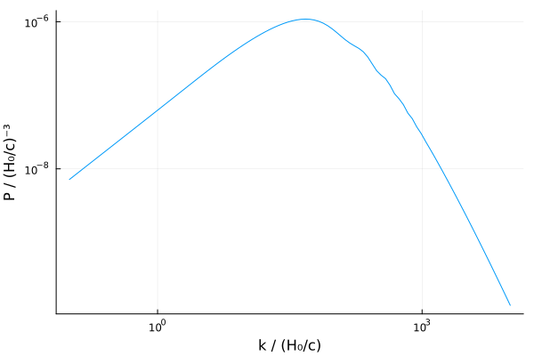
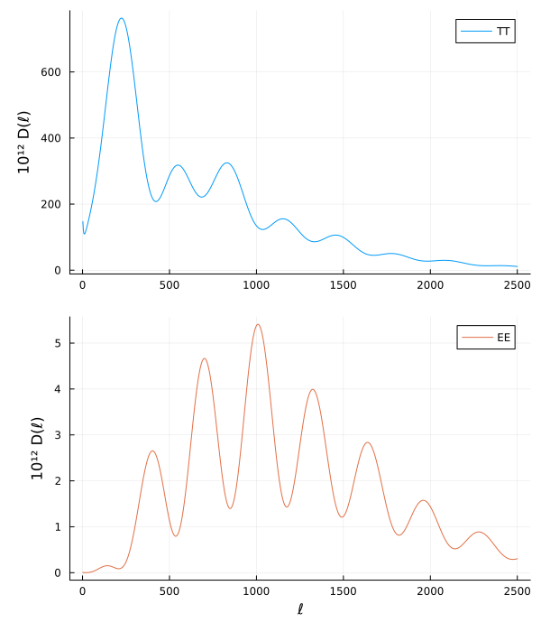

Minimal interacting model
This is the minimal ΛCDM model, but with general interactions between baryons, dark matter and dark energy, where it is easy to specify arbitrary expressions for the interactions $Qᵢⱼ$, $δQᵢⱼ$ and $fᵢⱼ$ between each species.
Model definition:
using SymBoltz
@independent_variables t # t = ln(a) (t = 0 today, t < 0 in the past)
Dt = Differential(t) # t-derivative operator
function interacting_model(; Qbc = 0, QbΛ = 0, QcΛ = 0, δQbc = 0, δQbΛ = 0, δQcΛ = 0, fQbc = 0, fQbΛ = 0, fQcΛ = 0, name = :QΛCDM)
# Constants, some functions and atomic energy levels defined in internal files
@unpack kB, ħ, c, GN, H100, eV, me, mH, mHe, σT, aR, δkron, smoothifelse, λH2s1s, EH2s1s, EH∞2s, EHe2s1s, λHe2p1s, fHe2p1s, EHe2p2s, EHe∞2s, EHe⁺∞1s, EHet∞2s, λHet2p1s, fHet2p1s, EHet2s1s, EHet2p2s, Gρ, GP = SymBoltz
lγmax = 10
lνmax = 10
lhmax = 10
reg(x; ϵ = 1e-9) = √(x^2 + ϵ^2)
ΛH = 8.2245809
ΛHe = 51.3
A2ps = 1.798287e9
A2pt = 177.58e0
αHfit(T; F=1.125, a=4.309, b=-0.6166, c=0.6703, d=0.5300, T₀=1e4) = F * 1e-19 * a * (T/T₀)^b / (1 + c * (T/T₀)^d)
αHefit(T; q=NaN, p=NaN, T1=10^5.114, T2=3.0) = q / (√(T/T2) * (1+√(T/T2))^(1-p) * (1+√(T/T1))^(1+p))
KHfitfactorfunc(a, A, z, w) = A*exp(-((log(a)+z)/w)^2)
γHe(; A=NaN, σ=NaN, f=NaN) = 3*A*fHe*reg(1-XHe⁺)*c^2 / (8π*σ*√(2π/(β*mHe*c^2))*reg(1-XH⁺)*f^3)
# Massive neutrino distribution function and quadrature momenta
nx = 4 # number of momenta
f₀(x) = 1 / (exp(x) + 1)
dlnf₀_dlnx(x) = -x / (1 + exp(-x))
x, W, W′ = SymBoltz.momentum_quadrature(f₀, dlnf₀_dlnx, nx)
x² = x .^ 2
dlnf₀ = dlnf₀_dlnx.(x)
∫dx_x²_f₀(g) = sum(collect(g .* W)) # ≈ ∫dx x²f₀(x)g(x)
∫dx_x²_f₀′(g) = sum(collect(g .* W′)) # ≈ ∫dx x²f₀′(x)g(x)
# 1) Parameters (add your own)
pars = @parameters begin
k, # wavenumber
h, H0SI, # Hubble parameter in SI units (most equations have units where H0=1 and do not need these)
Ωc0, # cold dark matter
Ωb0, YHe, fHe, # baryons and recombination
Tγ0, Ωγ0, # photons
Ων0, Tν0, Nν, # massless neutrinos
mh, mh_eV, Nh, Th0, Ωh0, yh0, Iρh0, # massive neutrinos
ΩΛ0, w0, wa, cΛs2, # dark energy (cosmological constant or w0wa)
zre1, Δzre1, nre1, # 1st reionization
zre2, Δzre2, nre2, # 2nd reionization
C, # integration constant in initial conditions
As, ns, # primordial power spectrum
αbc, αcΛ, αbΛ # interactions
end
# 2) Background (t) and perturbation (t,k) variables (add your own)
vars = @variables begin
a(t), z(t), ℋ(t), H(t), Ψ(t,k), Φ(t,k), τ(t), χ(t), [backwards = true], # metric
ρ(t), P(t), δρ(t,k), Π(t,k), # gravity
ρb(t), [backwards = true], Pb(t), wb(t), Tb(t), δb(t,k), Δb(t,k), θb(t,k), # baryons
κ(t), [backwards = true], v(t), csb2(t), β(t), ΔT(t), DTb(t), μc²(t), Xe(t), ne(t), λe(t), HSI(t), # recombination
XH⁺(t), nH(t), αH(t), βH(t), KH(t), KHfitfactor(t), CH(t), # Hydrogen recombination
nHe(t), XHe⁺(t), XHe⁺⁺(t), αHe(t), βHe(t), RHe⁺(t), τHe(t), KHe(t), invKHe0(t), invKHe1(t), invKHe2(t), CHe(t), DXHe⁺(t), DXHet⁺(t), γ2ps(t), αHet(t), βHet(t), τHet(t), pHet(t), CHet(t), CHetnum(t), γ2pt(t), # Helium recombination
Xre1(t), Xre2(t), # reionization
ργ(t), Pγ(t), wγ(t), Tγ(t), Fγ0(t,k), Fγ(t,k)[1:lγmax], Gγ0(t,k), Gγ(t,k)[1:lγmax], δγ(t,k), θγ(t,k), σγ(t,k), Πγ(t,k), # photons
ρc(t), [backwards = true], Pc(t), wc(t), δc(t,k), Δc(t,k), θc(t,k), # cold dark matter
ρν(t), Pν(t), wν(t), Tν(t), Fν0(t,k), Fν(t,k)[1:lνmax], δν(t,k), θν(t,k), σν(t,k), # massless neutrinos
ρh(t), Ph(t), wh(t), Ωh(t), Th(t), yh(t), csh2(t,k), δh(t,k), Δh(t,k), σh(t,k), uh(t,k), θh(t,k), Eh(t)[1:nx], ψh0(t,k)[1:nx], ψh(t,k)[1:nx,1:lhmax], Iρh(t), IPh(t), Iδρh(t,k), # massive neutrinos
ρΛ(t), [backwards = true], PΛ(t), wΛ(t), cΛa2(t), δΛ(t,k), θΛ(t,k), ΔΛ(t,k), # dark energy (cosmological constant or w0wa)
Qb(t), Qc(t), QΛ(t), δQb(t,k), δQc(t,k), δQΛ(t,k), fQb(t,k), fQc(t,k), fQΛ(t,k), θ(t,k), # interactions
fν(t), # misc
ρm(t,k), Δm(t,k), # matter source functions
ST_SW(t,k), ST_ISW(t,k), ST_Doppler(t,k), ST_polarization(t,k), ST(t,k), SE(t,k), Sψ(t,k) # CMB source functions
end
# 3) Equations for time evolution (modify or add your own)
Dτ(X) = ℋ * Dt(X) # conformal time derivative d/dτ = (dt/dτ) d/dt = ℋ d/dt
eqs = [
# metric equations
a ~ exp(t)
z ~ 1/a - 1
ℋ ~ a * H
Dτ(τ) ~ 1 # conformal time since the big bang (integrated forwards)
Dτ(χ) ~ -1 # lookback conformal time χ = τ₀ - τ (integrated backwards from χ = 0 today)
# gravity equations
H ~ √(8π/3 * ρ) # 1st Friedmann equation
Dτ(Φ) ~ -4π/3*a^2/ℋ*δρ - k^2/(3ℋ)*Φ - ℋ*Ψ
k^2 * (Φ - Ψ) ~ 12π * a^2 * Π
ρ ~ ρc + ρb + ργ + ρν + ρh + ρΛ
P ~ Pγ + Pν + Ph + PΛ
δρ ~ δc*ρc + δb*ρb + δγ*ργ + δν*ρν + δh*ρh + δΛ*ρΛ
Π ~ (1+wγ)*ργ*σγ + (1+wν)*ρν*σν + (1+wh)*ρh*σh
# baryon recombination
β ~ 1 / (kB*Tb)
λe ~ 2π*ħ / √(2π*me/β)
HSI ~ H0SI * H
Dτ(κ) ~ -a/H0SI * ne * σT * c
v ~ expand_derivatives(Dτ(exp(-κ)))
csb2 ~ kB/μc² * (Tb - DTb/(3ℋ))
μc² ~ mH*c^2 / (1 + (mH/mHe-1)*YHe + Xe*(1-YHe))
DTb ~ -2Tb*ℋ - a/h * 8/3*σT*aR/H100*Tγ^4 / (me*c) * Xe / (1+fHe+Xe) * ΔT
Dτ(ΔT) ~ DTb + ℋ*Tγ # Tγ ∝ 1/a
Tb ~ ΔT + Tγ
nH ~ (1-YHe) * ρb*H0SI^2/GN / mH
nHe ~ fHe * nH
ne ~ Xe * nH
Xe ~ XH⁺ + fHe*XHe⁺ + XHe⁺⁺ + Xre1 + Xre2
# baryon H⁺ + e⁻ recombination
αH ~ αHfit(Tb)
βH ~ αH / λe^3 * exp(-β*EH∞2s)
KHfitfactor ~ 1 + KHfitfactorfunc(a, -0.14, 7.28, 0.18) + KHfitfactorfunc(a, 0.079, 6.73, 0.33)
KH ~ KHfitfactor/8π * λH2s1s^3 / HSI
CH ~ smoothifelse(XH⁺ - 0.99, (1 + KH*ΛH*nH*(1-XH⁺)) / (1 + KH*(ΛH+βH)*nH*(1-XH⁺)), 1; k = 1e3)
Dτ(XH⁺) ~ -a/H0SI * CH * (αH*XH⁺*ne - βH*(1-XH⁺)*exp(-β*EH2s1s))
# baryon He⁺ + e⁻ singlet recombination
αHe ~ αHefit(Tb; q=10^(-16.744), p=0.711)
βHe ~ 4 * αHe / λe^3 * exp(-β*EHe∞2s)
KHe ~ 1 / (invKHe0 + invKHe1 + invKHe2)
invKHe0 ~ 8π*HSI / λHe2p1s^3
τHe ~ 3*A2ps*nHe*reg(1-XHe⁺) / invKHe0
invKHe1 ~ -exp(-τHe) * invKHe0
γ2ps ~ γHe(A = A2ps, σ = 1.436289e-22, f = fHe2p1s)
invKHe2 ~ A2ps/(1+0.36*γ2ps^0.86)*3*nHe*(1-XHe⁺)
CHe ~ smoothifelse(XHe⁺ - 0.99, (exp(-β*EHe2p2s) + KHe*ΛHe*nHe*(1-XHe⁺)) / (exp(-β*EHe2p2s) + KHe*(ΛHe+βHe)*nHe*(1-XHe⁺)), 1; k = 1e3)
DXHe⁺ ~ -a/H0SI * CHe * (αHe*XHe⁺*ne - βHe*(1-XHe⁺)*exp(-β*EHe2s1s))
# baryon He⁺ + e⁻ triplet recombination
αHet ~ αHefit(Tb; q=10^(-16.306), p=0.761)
βHet ~ 4/3 * αHet / λe^3 * exp(-β*EHet∞2s)
τHet ~ 3*A2pt*nHe*reg(1-XHe⁺) * λHet2p1s^3/(8π*HSI)
pHet ~ (1 - exp(-τHet)) / τHet
γ2pt ~ γHe(A = A2pt, σ = 1.484872e-22, f = fHet2p1s)
CHetnum ~ A2pt*(pHet+1/(1+0.66*γ2pt^0.9)/3)*exp(-β*EHet2p2s)
CHet ~ reg(CHetnum) / (reg(CHetnum) + βHet)
DXHet⁺ ~ -a/H0SI * CHet * (αHet*XHe⁺*ne - βHet*(1-XHe⁺)*3*exp(-β*EHet2s1s))
# baryon He⁺ + e⁻ total recombination
Dτ(XHe⁺) ~ DXHe⁺ + DXHet⁺
# baryon He⁺⁺ + e⁻ recombination
RHe⁺ ~ exp(-β*EHe⁺∞1s) / (nH * λe^3)
XHe⁺⁺ ~ 2RHe⁺*fHe / (1+fHe+RHe⁺) / (1 + √(1 + 4RHe⁺*fHe/(1+fHe+RHe⁺)^2))
# reionization
Xre1 ~ smoothifelse((1+zre1)^nre1 - (1+z)^nre1, 0, 1 + fHe; k = 1/(nre1*(1+zre1)^(nre1-1)*Δzre1))
Xre2 ~ smoothifelse((1+zre2)^nre2 - (1+z)^nre2, 0, 0 + fHe; k = 1/(nre2*(1+zre2)^(nre2-1)*Δzre2))
# baryons
wb ~ 0
Pb ~ wb*ρb
Δb ~ δb + (3ℋ*(1+wb) - a*Qb/ρb)*θb/k^2 # gauge-independent with ρb′ = -3ℋ(1+wb)ρb + aQb
# photons
Tγ ~ Tγ0 / a
ργ ~ 3/8π * Ωγ0 / a^4
wγ ~ 1/3
Pγ ~ wγ * ργ
Dτ(Fγ0) ~ -k*Fγ[1] + 4*Dτ(Φ)
Dτ(Fγ[1]) ~ k/3*(Fγ0-2Fγ[2]+4Ψ) - 4/3 * Dτ(κ)/k * (θb - θγ)
[Dτ(Fγ[l]) ~ k/(2l+1) * (l*Fγ[l-1] - (l+1)*Fγ[l+1]) + Dτ(κ) * (Fγ[l] - δkron(l,2)/10*Πγ) for l in 2:lγmax-1]...
Dτ(Fγ[lγmax]) ~ k*Fγ[lγmax-1] - (lγmax+1) / τ * Fγ[lγmax] + Dτ(κ) * Fγ[lγmax]
δγ ~ Fγ0
θγ ~ 3k*Fγ[1]/4
σγ ~ Fγ[2]/2
Πγ ~ Fγ[2] + Gγ0 + Gγ[2]
Dτ(Gγ0) ~ -k * Gγ[1] + Dτ(κ) * (Gγ0 - Πγ/2)
Dτ(Gγ[1]) ~ k/3 * (1*Gγ0 - 2*Gγ[2]) + Dτ(κ) * Gγ[1]
[Dτ(Gγ[l]) ~ k/(2l+1) * (l*Gγ[l-1] - (l+1)*Gγ[l+1]) + Dτ(κ) * (Gγ[l] - δkron(l,2)/10*Πγ) for l in 2:lγmax-1]...
Dτ(Gγ[lγmax]) ~ k*Gγ[lγmax-1] - (lγmax+1) / τ * Gγ[lγmax] + Dτ(κ) * Gγ[lγmax]
# cold dark matter
wc ~ 0
Pc ~ wc*ρc
Δc ~ δc + (3ℋ*(1+wc) - a*Qc/ρc)*θc/k^2
# massless neutrinos
ρν ~ 3/8π * Ων0 / a^4
wν ~ 1/3
Pν ~ wν * ρν
Tν ~ Tν0 / a
Dτ(Fν0) ~ -k*Fν[1] + 4*Dτ(Φ)
Dτ(Fν[1]) ~ k/3*(Fν0-2Fν[2]+4Ψ)
[Dτ(Fν[l]) ~ k/(2l+1) * (l*Fν[l-1] - (l+1)*Fν[l+1]) for l in 2:lνmax-1]...
Dτ(Fν[lνmax]) ~ k*Fν[lνmax-1] - (lνmax+1) / τ * Fν[lνmax]
δν ~ Fν0
θν ~ 3k*Fν[1]/4
σν ~ Fν[2]/2
# massive neutrinos
Th ~ Th0 / a
yh ~ yh0 * a
Iρh ~ -∫dx_x²_f₀′(@. x² * Gρ(yh / x)) # by parts with v′ = x²E, v = x⁴Gρ(y/x)
IPh ~ -∫dx_x²_f₀′(@. x² * GP(yh / x) / 3) # by parts with v′ = x⁴/(3E), v = x⁴GP(y/x)/3
ρh ~ Nh/(π^2) * (kB*Th)^4/(ħ*c)^3 * Iρh / ((H0SI*c)^2/GN)
Ph ~ Nh/(π^2) * (kB*Th)^4/(ħ*c)^3 * IPh / ((H0SI*c)^2/GN)
wh ~ Ph / ρh
Iδρh ~ ∫dx_x²_f₀(Eh .* ψh0)
δh ~ Iδρh / Iρh
Δh ~ δh + 3ℋ*(1+wh)*θh/k^2
uh ~ ∫dx_x²_f₀(x .* ψh[:,1]) / (Iρh + IPh)
θh ~ k * uh
σh ~ 2/3 * ∫dx_x²_f₀(x² ./ Eh .* ψh[:,2]) / (Iρh + IPh)
csh2 ~ ∫dx_x²_f₀(x² ./ Eh .* ψh0) / 3Iδρh
[Eh[i] ~ √(x[i]^2 + yh^2) for i in 1:nx]...
[Dτ(ψh0[i]) ~ -k * x[i]/Eh[i] * ψh[i,1] - Dτ(Φ) * dlnf₀[i] for i in 1:nx]...
[Dτ(ψh[i,1]) ~ k/3 * x[i]/Eh[i] * (ψh0[i] - 2ψh[i,2]) - k/3 * Eh[i]/x[i] * Ψ * dlnf₀[i] for i in 1:nx]...
[Dτ(ψh[i,l]) ~ k/(2l+1) * x[i]/Eh[i] * (l*ψh[i,l-1] - (l+1) * ψh[i,l+1]) for i in 1:nx, l in 2:lhmax-1]...
[Dτ(ψh[i,lhmax]) ~ k/(2lhmax+1) * x[i]/Eh[i] * (lhmax*ψh[i,lhmax-1] - (lhmax+1) * ((2lhmax+1) * Eh[i]/x[i] * ψh[i,lhmax] / (k*τ) - ψh[i,lhmax-1])) for i in 1:nx]...
# dark energy (cosmological constant or w0wa)
wΛ ~ w0 + wa*(1-a)
PΛ ~ wΛ*ρΛ
cΛa2 ~ wΛ + ρΛ * Dτ(wΛ) / Dτ(ρΛ) # completely general
ΔΛ ~ δΛ + (3ℋ*(1+wΛ) - a*QΛ/ρΛ)*θΛ/k^2
# neutrino-to-radiation fraction
fν ~ (ρν + ρh) / (ρν + ρh + ργ)
# matter source functions
ρm ~ ρb + ρc + ρh
Δm ~ (ρb*Δb + ρc*Δc + ρh*Δh) / ρm
# CMB source functions
ST_SW ~ v * (δγ/4 + Ψ + Πγ/16)
ST_ISW ~ exp(-κ) * Dτ(Ψ + Φ) |> expand_derivatives
ST_Doppler ~ Dτ(v*θb) / k^2 |> expand_derivatives
ST_polarization ~ 3/(16k^2) * Dτ(Dτ(v*Πγ)) |> expand_derivatives
ST ~ ST_SW + ST_ISW + ST_Doppler + ST_polarization
SE ~ 3/16 * v*Πγ / (k*χ)^2
Sψ ~ -(Ψ + Φ)
# total interactions on each species from the pairwise ones
Qb ~ -Qbc + QbΛ
Qc ~ +Qbc + QcΛ
QΛ ~ -QcΛ - QbΛ
δQb ~ -δQbc + δQbΛ
δQc ~ +δQbc + δQcΛ
δQΛ ~ -δQcΛ - δQbΛ
fQb ~ -fQbc + fQbΛ
fQc ~ +fQbc + fQcΛ
fQΛ ~ -fQcΛ - fQbΛ
θ ~ ((ρΛ+PΛ)*θΛ + (ρh+Ph)*θh + (ρν+Pν)*θν + (ρc+Pc)*θc + (ργ+Pγ)*θγ + (ρb+Pb)*θb) / ((ρΛ+PΛ) + (ρh+Ph) + (ρν+Pν) + (ρc+Pc) + (ργ+Pγ) + (ρb+Pb)) # total velocity
Dτ(ρb) ~ -3ℋ*(1+wb)*ρb + a*Qb
Dτ(ρc) ~ -3ℋ*(1+wc)*ρc + a*Qc
Dτ(ρΛ) ~ -3ℋ*(1+wΛ)*ρΛ + a*QΛ
#Dτ(δb) ~ - θb + (a * Qb / ρb) * (Ψ - δb + 3ℋ*csb2*θb/k^2) + (a * δQb / ρb) + 3*Dτ(Φ)
Dτ(δb) ~ -3ℋ*csb2*δb - 9ℋ^2*csb2*θb/k^2 - θb + (a * Qb / ρb) * (Ψ - δb + 3ℋ*csb2*θb/k^2) + (a * δQb / ρb) + 3*Dτ(Φ)
#Dτ(θb) ~ -ℋ*θb + k^2*csb2*δb + k^2*Ψ + (a * Qb / ρb) * (θ - θb*(1+csb2)) + (a * k^2 / ρb) * fQb - 4/3*Dτ(κ)*ργ/ρb*(θγ-θb)
Dτ(θb) ~ -ℋ*(1 - 3csb2)*θb + k^2*csb2*δb + k^2*Ψ + (a * Qb / ρb) * (θ - θb*(1+csb2)) + (a * k^2 / ρb) * fQb - 4/3*Dτ(κ)*ργ/ρb*(θγ-θb)
Dτ(δc) ~ -θc + (a * Qc / ρc) * (Ψ - δc) + (a * δQc / ρc) + 3*Dτ(Φ)
Dτ(θc) ~ -ℋ*θc + k^2*Ψ + (a * Qc / ρc) * (θ - θc) + (a * k^2 / ρc) * fQc
Dτ(δΛ) ~ -(1+wΛ)*θΛ - 3ℋ*(cΛs2-wΛ)*δΛ - 9*(ℋ/k)^2*(1+wΛ)*(cΛs2-cΛa2)*θΛ + (a * QΛ / ρΛ) * (Ψ - δΛ + 3ℋ*(cΛs2-cΛa2)*θΛ/k^2) + (a * δQΛ / ρΛ) + 3*(1+wΛ)*Dτ(Φ)
Dτ(θΛ) ~ -ℋ*(1-3*cΛs2)*θΛ + cΛs2/(1+wΛ)*k^2*δΛ + k^2*Ψ + (a * QΛ / (ρΛ*(1+wΛ))) * (θ - θΛ*(1+cΛs2)) + (a * k^2 / (ρΛ*(1+wΛ))) * fQΛ
]
# 4) Equations for initial conditions (modify or add your own)
initialization_eqs = [
# metric/gravity
Ψ ~ 20C / (15 + 4fν)
# baryons
δb ~ -3/2 * Ψ
θb ~ 1/2 * (k^2*τ) * Ψ
# photons
Fγ0 ~ -2Ψ
Fγ[1] ~ 2/3 * k*τ*Ψ
Fγ[2] ~ -8/15 * k/Dτ(κ) * Fγ[1]
[Fγ[l] ~ -l/(2l+1) * k/Dτ(κ) * Fγ[l-1] for l in 3:lγmax]...
Gγ0 ~ 5/4 * Fγ[2]
Gγ[1] ~ -1/4 * k/Dτ(κ) * Fγ[2]
Gγ[2] ~ 1/4 * Fγ[2]
[Gγ[l] ~ -l/(2l+1) * k/Dτ(κ) * Gγ[l-1] for l in 3:lγmax]...
# cold dark matter
δc ~ -3/2 * Ψ
θc ~ 1/2 * (k^2*τ) * Ψ
# massless neutrinos
δν ~ -2 * Ψ
θν ~ 1/2 * (k^2*τ) * Ψ
σν ~ 1/15 * (k*τ)^2 * Ψ
[Fν[l] ~ 1/(2l+1) * k*τ * Fν[l-1] for l in 3:lνmax]...
# massive neutrinos
[ψh0[i] ~ -1/4 * (-2Ψ) * dlnf₀[i] for i in 1:nx]...
[ψh[i,1] ~ -1/3 * Eh[i]/x[i] * (1/2*k*τ*Ψ) * dlnf₀[i] for i in 1:nx]...
[ψh[i,2] ~ -1/2 * (1/15*(k*τ)^2*Ψ) * dlnf₀[i] for i in 1:nx]...
[ψh[i,l] ~ 0 for i in 1:nx, l in 3:lhmax]...
# dark energy (w0wa)
δΛ ~ -3/2 * (1+wΛ) * Ψ # for w0wa
θΛ ~ 1/2 * (k^2*τ) * Ψ # for w0wa
]
# 5) Default numerical values for parameters and initial conditions (modify or add your own, remove to require explicit value when creating CosmologyProblem)
initial_conditions = [
χ => 0.0 # today
τ => 1/ℋ # initialize conformal time from radiation-dominated solution
ρb => 3/8π*Ωb0 # today
ρc => 3/8π*Ωc0 # today
ρΛ => 3/8π*ΩΛ0 # today
H0SI => H100*h
C => 1/2
XHe⁺ => 1.0
XH⁺ => 1.0
κ => 0.0 # today
ΔT => 0.0
zre1 => 7.6711
Δzre1 => 0.5
nre1 => 3/2
zre2 => 3.5
Δzre2 => 0.5
nre2 => 1
Tν0 => (4/11)^(1/3) * Tγ0
Ων0 => Nν * 7/8 * (4/11)^(4/3) * Ωγ0
Th0 => (4/11)^(1/3) * Tγ0
ΩΛ0 => 1 - Ωγ0 - Ωc0 - Ωb0 - Ων0 - Ωh0
Ωγ0 => π^2/15 * (kB*Tγ0)^4 / (ħ^3*c^5) * 8π*GN / (3*H0SI^2)
mh => mh_eV * eV/c^2
yh0 => mh*c^2 / (kB*Th0)
Iρh0 => -∫dx_x²_f₀′(@. x² * Gρ(yh0 / x))
Ωh0 => Nh * 8π/3 * 2/(2π^2) * (kB*Th0)^4 / (ħ*c)^3 * Iρh0 / ((H0SI*c)^2/GN)
fHe => YHe / (mHe/mH*(1-YHe))
cΛs2 => 1
]
# Equations are written with τ-derivatives ℋ*Dt(X); divide by ℋ so the left sides are t-derivatives
eqs = [Symbolics.is_derivative(Symbolics.unwrap(eq.lhs/ℋ)) ? eq.lhs/ℋ ~ eq.rhs/ℋ : eq for eq in eqs]
# 6) Pack everything down into a symbolic system (modify the name to fit your modified model)
return complete(System(eqs, t, vars, pars; initialization_eqs, initial_conditions, name))
end
# create non-interacting base model
M = interacting_model(name = :ΛCDM)\[ \begin{align*} a\left( t \right) &= e^{t} \\ z\left( t \right) &= -1 + \frac{1}{a\left( t \right)} \\ \mathscr{H}\left( t \right) &= H\left( t \right) ~ a\left( t \right) \\ \frac{\mathrm{d}\tau\left( t \right)}{\mathrm{d}t} &= \frac{1}{\mathscr{H}\left( t \right)} \\ \frac{\mathrm{d}\chi\left( t \right)}{\mathrm{d}t} &= \frac{-1}{\mathscr{H}\left( t \right)} \\ H\left( t \right) &= \sqrt{8.3776 ~ \rho\left( t \right)} \\ \frac{\mathrm{d}}{\mathrm{d}t} ~ \Phi\left( t, k \right) &= \frac{\frac{ - 4.1888 ~ \left( a\left( t \right) \right)^{2} ~ \mathtt{\delta\rho}\left( t, k \right)}{\mathscr{H}\left( t \right)} + \frac{ - k^{2} ~ \Phi\left( t, k \right)}{3 ~ \mathscr{H}\left( t \right)} - \Psi\left( t, k \right) ~ \mathscr{H}\left( t \right)}{\mathscr{H}\left( t \right)} \\ k^{2} ~ \left( \Phi\left( t, k \right) - \Psi\left( t, k \right) \right) &= 37.699 ~ \left( a\left( t \right) \right)^{2} ~ \Pi\left( t, k \right) \\ \rho\left( t \right) &= \mathtt{{\rho}b}\left( t \right) + \mathtt{{\rho}c}\left( t \right) + \mathtt{{\rho}h}\left( t \right) + \mathtt{\rho\Lambda}\left( t \right) + \mathtt{\rho\gamma}\left( t \right) + \mathtt{\rho\nu}\left( t \right) \\ P\left( t \right) &= \mathtt{Ph}\left( t \right) + \mathtt{P\Lambda}\left( t \right) + \mathtt{P\gamma}\left( t \right) + \mathtt{P\nu}\left( t \right) \\ \mathtt{\delta\rho}\left( t, k \right) &= \mathtt{{\delta}b}\left( t, k \right) ~ \mathtt{{\rho}b}\left( t \right) + \mathtt{{\delta}c}\left( t, k \right) ~ \mathtt{{\rho}c}\left( t \right) + \mathtt{{\delta}h}\left( t, k \right) ~ \mathtt{{\rho}h}\left( t \right) + \mathtt{\delta\Lambda}\left( t, k \right) ~ \mathtt{\rho\Lambda}\left( t \right) + \mathtt{\delta\gamma}\left( t, k \right) ~ \mathtt{\rho\gamma}\left( t \right) + \mathtt{\delta\nu}\left( t, k \right) ~ \mathtt{\rho\nu}\left( t \right) \\ \Pi\left( t, k \right) &= \left( 1 + \mathtt{wh}\left( t \right) \right) ~ \mathtt{{\rho}h}\left( t \right) ~ \mathtt{{\sigma}h}\left( t, k \right) + \left( 1 + \mathtt{w\gamma}\left( t \right) \right) ~ \mathtt{\rho\gamma}\left( t \right) ~ \mathtt{\sigma\gamma}\left( t, k \right) + \left( 1 + \mathtt{w\nu}\left( t \right) \right) ~ \mathtt{\rho\nu}\left( t \right) ~ \mathtt{\sigma\nu}\left( t, k \right) \\ \beta\left( t \right) &= \frac{1}{1.3806 \cdot 10^{-23} ~ \mathtt{Tb}\left( t \right)} \\ \mathtt{{\lambda}e}\left( t \right) &= \frac{6.6261 \cdot 10^{-34}}{\sqrt{\frac{5.7236 \cdot 10^{-30}}{\beta\left( t \right)}}} \\ \mathtt{HSI}\left( t \right) &= H\left( t \right) ~ \mathtt{H0SI} \\ \frac{\mathrm{d}\kappa\left( t \right)}{\mathrm{d}t} &= \frac{ - 1.9944 \cdot 10^{-20} ~ a\left( t \right) ~ \mathtt{ne}\left( t \right)}{\mathtt{H0SI} ~ \mathscr{H}\left( t \right)} \\ v\left( t \right) &= - \frac{\mathrm{d}\kappa\left( t \right)}{\mathrm{d}t} ~ e^{ - \kappa\left( t \right)} ~ \mathscr{H}\left( t \right) \\ \mathtt{csb2}\left( t \right) &= \frac{1.3806 \cdot 10^{-23} ~ \left( \mathtt{Tb}\left( t \right) + \frac{ - \mathtt{DTb}\left( t \right)}{3 ~ \mathscr{H}\left( t \right)} \right)}{\mathtt{{\mu}c^2}\left( t \right)} \\ \mathtt{{\mu}c^2}\left( t \right) &= \frac{1.5044 \cdot 10^{-10}}{1 - 0.74816 ~ \mathtt{YHe} + \mathtt{Xe}\left( t \right) ~ \left( 1 - \mathtt{YHe} \right)} \\ \mathtt{DTb}\left( t \right) &= \frac{ - 4.0265 \cdot 10^{-43} ~ \left( \mathtt{T\gamma}\left( t \right) \right)^{4} ~ \mathtt{Xe}\left( t \right) ~ a\left( t \right) ~ \mathtt{{\Delta}T}\left( t \right)}{2.6551 \cdot 10^{-39} ~ \left( 1 + \mathtt{Xe}\left( t \right) + \mathtt{fHe} \right) ~ h} - 2 ~ \mathtt{Tb}\left( t \right) ~ \mathscr{H}\left( t \right) \\ \frac{\mathrm{d}\mathtt{{\Delta}T}\left( t \right)}{\mathrm{d}t} &= \frac{\mathtt{DTb}\left( t \right) + \mathtt{T\gamma}\left( t \right) ~ \mathscr{H}\left( t \right)}{\mathscr{H}\left( t \right)} \\ \mathtt{Tb}\left( t \right) &= \mathtt{T\gamma}\left( t \right) + \mathtt{{\Delta}T}\left( t \right) \\ \mathtt{nH}\left( t \right) &= 8.9513 \cdot 10^{36} ~ \mathtt{H0SI}^{2} ~ \left( 1 - \mathtt{YHe} \right) ~ \mathtt{{\rho}b}\left( t \right) \\ \mathtt{nHe}\left( t \right) &= \mathtt{fHe} ~ \mathtt{nH}\left( t \right) \\ \mathtt{ne}\left( t \right) &= \mathtt{Xe}\left( t \right) ~ \mathtt{nH}\left( t \right) \\ \mathtt{Xe}\left( t \right) &= \mathtt{XHe^{+ +}}\left( t \right) + \mathtt{XH^+}\left( t \right) + \mathtt{Xre1}\left( t \right) + \mathtt{Xre2}\left( t \right) + \mathtt{XHe^+}\left( t \right) ~ \mathtt{fHe} \\ \mathtt{{\alpha}H}\left( t \right) &= \frac{4.8476 \cdot 10^{-19}}{\left( \frac{\mathtt{Tb}\left( t \right)}{10000} \right)^{0.6166} ~ \left( 1 + 0.6703 ~ \left( \frac{\mathtt{Tb}\left( t \right)}{10000} \right)^{0.53} \right)} \\ \mathtt{{\beta}H}\left( t \right) &= \frac{e^{ - 5.4468 \cdot 10^{-19} ~ \beta\left( t \right)} ~ \mathtt{{\alpha}H}\left( t \right)}{\left( \mathtt{{\lambda}e}\left( t \right) \right)^{3}} \\ \mathtt{KHfitfactor}\left( t \right) &= 1 + 0.079 ~ e^{ - \left( \frac{6.73 + \log\left( a\left( t \right) \right)}{0.33} \right)^{2}} - 0.14 ~ e^{ - \left( \frac{7.28 + \log\left( a\left( t \right) \right)}{0.18} \right)^{2}} \\ \mathtt{KH}\left( t \right) &= \frac{7.1484 \cdot 10^{-23} ~ \mathtt{KHfitfactor}\left( t \right)}{\mathtt{HSI}\left( t \right)} \\ \mathtt{CH}\left( t \right) &= 0.5 ~ \left( 1 + \frac{1 + 8.2246 ~ \mathtt{KH}\left( t \right) ~ \left( 1 - \mathtt{XH^+}\left( t \right) \right) ~ \mathtt{nH}\left( t \right)}{1 + \mathtt{KH}\left( t \right) ~ \left( 1 - \mathtt{XH^+}\left( t \right) \right) ~ \mathtt{nH}\left( t \right) ~ \left( 8.2246 + \mathtt{{\beta}H}\left( t \right) \right)} + \tanh\left( 1000 ~ \left( -0.99 + \mathtt{XH^+}\left( t \right) \right) \right) ~ \left( 1 + \frac{-1 - 8.2246 ~ \mathtt{KH}\left( t \right) ~ \left( 1 - \mathtt{XH^+}\left( t \right) \right) ~ \mathtt{nH}\left( t \right)}{1 + \mathtt{KH}\left( t \right) ~ \left( 1 - \mathtt{XH^+}\left( t \right) \right) ~ \mathtt{nH}\left( t \right) ~ \left( 8.2246 + \mathtt{{\beta}H}\left( t \right) \right)} \right) \right) \\ \frac{\mathrm{d}\mathtt{XH^+}\left( t \right)}{\mathrm{d}t} &= \frac{ - \mathtt{CH}\left( t \right) ~ \left( - \left( 1 - \mathtt{XH^+}\left( t \right) \right) ~ e^{ - 1.634 \cdot 10^{-18} ~ \beta\left( t \right)} ~ \mathtt{{\beta}H}\left( t \right) + \mathtt{XH^+}\left( t \right) ~ \mathtt{ne}\left( t \right) ~ \mathtt{{\alpha}H}\left( t \right) \right) ~ a\left( t \right)}{\mathtt{H0SI} ~ \mathscr{H}\left( t \right)} \\ \mathtt{{\alpha}He}\left( t \right) &= \frac{1.803 \cdot 10^{-17}}{\left( 1 + \sqrt{\frac{\mathtt{Tb}\left( t \right)}{1.3002 \cdot 10^{5}}} \right)^{1.711} ~ \left( 1 + \sqrt{\frac{\mathtt{Tb}\left( t \right)}{3}} \right)^{0.289} ~ \sqrt{\frac{\mathtt{Tb}\left( t \right)}{3}}} \\ \mathtt{{\beta}He}\left( t \right) &= \frac{4 ~ e^{ - 6.3633 \cdot 10^{-19} ~ \beta\left( t \right)} ~ \mathtt{{\alpha}He}\left( t \right)}{\left( \mathtt{{\lambda}e}\left( t \right) \right)^{3}} \\ \mathtt{KHe}\left( t \right) &= \frac{1}{\mathtt{invKHe0}\left( t \right) + \mathtt{invKHe1}\left( t \right) + \mathtt{invKHe2}\left( t \right)} \\ \mathtt{invKHe0}\left( t \right) &= 1.2597 \cdot 10^{23} ~ \mathtt{HSI}\left( t \right) \\ \mathtt{{\tau}He}\left( t \right) &= \frac{5.3949 \cdot 10^{9} ~ \mathtt{nHe}\left( t \right) ~ \sqrt{1 \cdot 10^{-18} + \left( 1 - \mathtt{XHe^+}\left( t \right) \right)^{2}}}{\mathtt{invKHe0}\left( t \right)} \\ \mathtt{invKHe1}\left( t \right) &= - e^{ - \mathtt{{\tau}He}\left( t \right)} ~ \mathtt{invKHe0}\left( t \right) \\ \mathtt{{\gamma}2ps}\left( t \right) &= \frac{4.8487 \cdot 10^{26} ~ \mathtt{fHe} ~ \sqrt{1 \cdot 10^{-18} + \left( 1 - \mathtt{XHe^+}\left( t \right) \right)^{2}}}{4.8748 \cdot 10^{26} ~ \sqrt{1 \cdot 10^{-18} + \left( 1 - \mathtt{XH^+}\left( t \right) \right)^{2}} ~ \sqrt{\frac{6.2832}{5.9736 \cdot 10^{-10} ~ \beta\left( t \right)}}} \\ \mathtt{invKHe2}\left( t \right) &= \frac{5.3949 \cdot 10^{9} ~ \left( 1 - \mathtt{XHe^+}\left( t \right) \right) ~ \mathtt{nHe}\left( t \right)}{1 + 0.36 ~ \left( \mathtt{{\gamma}2ps}\left( t \right) \right)^{0.86}} \\ \mathtt{CHe}\left( t \right) &= 0.5 ~ \left( 1 + \frac{e^{ - 9.6491 \cdot 10^{-20} ~ \beta\left( t \right)} + 51.3 ~ \mathtt{KHe}\left( t \right) ~ \left( 1 - \mathtt{XHe^+}\left( t \right) \right) ~ \mathtt{nHe}\left( t \right)}{e^{ - 9.6491 \cdot 10^{-20} ~ \beta\left( t \right)} + \mathtt{KHe}\left( t \right) ~ \left( 1 - \mathtt{XHe^+}\left( t \right) \right) ~ \mathtt{nHe}\left( t \right) ~ \left( 51.3 + \mathtt{{\beta}He}\left( t \right) \right)} + \tanh\left( 1000 ~ \left( -0.99 + \mathtt{XHe^+}\left( t \right) \right) \right) ~ \left( 1 + \frac{ - e^{ - 9.6491 \cdot 10^{-20} ~ \beta\left( t \right)} - 51.3 ~ \mathtt{KHe}\left( t \right) ~ \left( 1 - \mathtt{XHe^+}\left( t \right) \right) ~ \mathtt{nHe}\left( t \right)}{e^{ - 9.6491 \cdot 10^{-20} ~ \beta\left( t \right)} + \mathtt{KHe}\left( t \right) ~ \left( 1 - \mathtt{XHe^+}\left( t \right) \right) ~ \mathtt{nHe}\left( t \right) ~ \left( 51.3 + \mathtt{{\beta}He}\left( t \right) \right)} \right) \right) \\ \mathtt{DXHe^+}\left( t \right) &= \frac{ - \mathtt{CHe}\left( t \right) ~ \left( - \left( 1 - \mathtt{XHe^+}\left( t \right) \right) ~ e^{ - 3.303 \cdot 10^{-18} ~ \beta\left( t \right)} ~ \mathtt{{\beta}He}\left( t \right) + \mathtt{XHe^+}\left( t \right) ~ \mathtt{ne}\left( t \right) ~ \mathtt{{\alpha}He}\left( t \right) \right) ~ a\left( t \right)}{\mathtt{H0SI}} \\ \mathtt{{\alpha}Het}\left( t \right) &= \frac{4.9431 \cdot 10^{-17}}{\left( 1 + \sqrt{\frac{\mathtt{Tb}\left( t \right)}{1.3002 \cdot 10^{5}}} \right)^{1.761} ~ \left( 1 + \sqrt{\frac{\mathtt{Tb}\left( t \right)}{3}} \right)^{0.239} ~ \sqrt{\frac{\mathtt{Tb}\left( t \right)}{3}}} \\ \mathtt{{\beta}Het}\left( t \right) &= \frac{1.3333 ~ e^{ - 7.6388 \cdot 10^{-19} ~ \beta\left( t \right)} ~ \mathtt{{\alpha}Het}\left( t \right)}{\left( \mathtt{{\lambda}e}\left( t \right) \right)^{3}} \\ \mathtt{{\tau}Het}\left( t \right) &= \frac{1.102 \cdot 10^{-19} ~ \mathtt{nHe}\left( t \right) ~ \sqrt{1 \cdot 10^{-18} + \left( 1 - \mathtt{XHe^+}\left( t \right) \right)^{2}}}{25.133 ~ \mathtt{HSI}\left( t \right)} \\ \mathtt{pHet}\left( t \right) &= \frac{1 - e^{ - \mathtt{{\tau}Het}\left( t \right)}}{\mathtt{{\tau}Het}\left( t \right)} \\ \mathtt{{\gamma}2pt}\left( t \right) &= \frac{4.788 \cdot 10^{19} ~ \mathtt{fHe} ~ \sqrt{1 \cdot 10^{-18} + \left( 1 - \mathtt{XHe^+}\left( t \right) \right)^{2}}}{4.861 \cdot 10^{26} ~ \sqrt{1 \cdot 10^{-18} + \left( 1 - \mathtt{XH^+}\left( t \right) \right)^{2}} ~ \sqrt{\frac{6.2832}{5.9736 \cdot 10^{-10} ~ \beta\left( t \right)}}} \\ \mathtt{CHetnum}\left( t \right) &= 177.58 ~ e^{ - 1.8337 \cdot 10^{-19} ~ \beta\left( t \right)} ~ \left( \frac{1}{3 ~ \left( 1 + 0.66 ~ \left( \mathtt{{\gamma}2pt}\left( t \right) \right)^{0.9} \right)} + \mathtt{pHet}\left( t \right) \right) \\ \mathtt{CHet}\left( t \right) &= \frac{\sqrt{1 \cdot 10^{-18} + \left( \mathtt{CHetnum}\left( t \right) \right)^{2}}}{\sqrt{1 \cdot 10^{-18} + \left( \mathtt{CHetnum}\left( t \right) \right)^{2}} + \mathtt{{\beta}Het}\left( t \right)} \\ \mathtt{DXHet^+}\left( t \right) &= \frac{ - \mathtt{CHet}\left( t \right) ~ \left( - 3 ~ \left( 1 - \mathtt{XHe^+}\left( t \right) \right) ~ e^{ - 3.1755 \cdot 10^{-18} ~ \beta\left( t \right)} ~ \mathtt{{\beta}Het}\left( t \right) + \mathtt{XHe^+}\left( t \right) ~ \mathtt{ne}\left( t \right) ~ \mathtt{{\alpha}Het}\left( t \right) \right) ~ a\left( t \right)}{\mathtt{H0SI}} \\ \frac{\mathrm{d}\mathtt{XHe^+}\left( t \right)}{\mathrm{d}t} &= \frac{\mathtt{DXHet^+}\left( t \right) + \mathtt{DXHe^+}\left( t \right)}{\mathscr{H}\left( t \right)} \\ \mathtt{RHe^+}\left( t \right) &= \frac{e^{ - 8.7187 \cdot 10^{-18} ~ \beta\left( t \right)}}{\left( \mathtt{{\lambda}e}\left( t \right) \right)^{3} ~ \mathtt{nH}\left( t \right)} \\ \mathtt{XHe^{+ +}}\left( t \right) &= \frac{2 ~ \mathtt{RHe^+}\left( t \right) ~ \mathtt{fHe}}{\left( 1 + \mathtt{RHe^+}\left( t \right) + \mathtt{fHe} \right) ~ \left( 1 + \sqrt{1 + \frac{4 ~ \mathtt{RHe^+}\left( t \right) ~ \mathtt{fHe}}{\left( 1 + \mathtt{RHe^+}\left( t \right) + \mathtt{fHe} \right)^{2}}} \right)} \\ \mathtt{Xre1}\left( t \right) &= 0.5 ~ \left( 1 + \mathtt{fHe} + \left( 1 + \mathtt{fHe} \right) ~ \tanh\left( \frac{ - \left( 1 + z\left( t \right) \right)^{\mathtt{nre1}} + \left( 1 + \mathtt{zre1} \right)^{\mathtt{nre1}}}{\left( 1 + \mathtt{zre1} \right)^{-1 + \mathtt{nre1}} ~ \mathtt{nre1} ~ \mathtt{{\Delta}zre1}} \right) \right) \\ \mathtt{Xre2}\left( t \right) &= 0.5 ~ \left( \mathtt{fHe} + \mathtt{fHe} ~ \tanh\left( \frac{ - \left( 1 + z\left( t \right) \right)^{\mathtt{nre2}} + \left( 1 + \mathtt{zre2} \right)^{\mathtt{nre2}}}{\left( 1 + \mathtt{zre2} \right)^{-1 + \mathtt{nre2}} ~ \mathtt{nre2} ~ \mathtt{{\Delta}zre2}} \right) \right) \\ \mathtt{wb}\left( t \right) &= 0 \\ \mathtt{Pb}\left( t \right) &= \mathtt{wb}\left( t \right) ~ \mathtt{{\rho}b}\left( t \right) \\ \mathtt{{\Delta}b}\left( t, k \right) &= \frac{\left( \frac{ - \mathtt{Qb}\left( t \right) ~ a\left( t \right)}{\mathtt{{\rho}b}\left( t \right)} + 3 ~ \left( 1 + \mathtt{wb}\left( t \right) \right) ~ \mathscr{H}\left( t \right) \right) ~ \mathtt{{\theta}b}\left( t, k \right)}{k^{2}} + \mathtt{{\delta}b}\left( t, k \right) \\ \mathtt{T\gamma}\left( t \right) &= \frac{\mathtt{T{\gamma}0}}{a\left( t \right)} \\ \mathtt{\rho\gamma}\left( t \right) &= \frac{0.11937 ~ \mathtt{\Omega{\gamma}0}}{\left( a\left( t \right) \right)^{4}} \\ \mathtt{w\gamma}\left( t \right) &= 0.33333 \\ \mathtt{P\gamma}\left( t \right) &= \mathtt{w\gamma}\left( t \right) ~ \mathtt{\rho\gamma}\left( t \right) \\ \frac{\mathrm{d}}{\mathrm{d}t} ~ \mathtt{F{\gamma}0}\left( t, k \right) &= \frac{4 ~ \frac{\mathrm{d}}{\mathrm{d}t} ~ \Phi\left( t, k \right) ~ \mathscr{H}\left( t \right) - \mathtt{F\gamma}\_{1}\left( t, k \right) ~ k}{\mathscr{H}\left( t \right)} \\ \frac{\mathrm{d}}{\mathrm{d}t} ~ \mathtt{F\gamma}\_{1}\left( t, k \right) &= \frac{\frac{ - 1.3333 ~ \frac{\mathrm{d}\kappa\left( t \right)}{\mathrm{d}t} ~ \left( \mathtt{{\theta}b}\left( t, k \right) - \mathtt{\theta\gamma}\left( t, k \right) \right) ~ \mathscr{H}\left( t \right)}{k} + \frac{1}{3} ~ \left( - 2 ~ \mathtt{F\gamma}\_{2}\left( t, k \right) + \mathtt{F{\gamma}0}\left( t, k \right) + 4 ~ \Psi\left( t, k \right) \right) ~ k}{\mathscr{H}\left( t \right)} \\ \frac{\mathrm{d}}{\mathrm{d}t} ~ \mathtt{F\gamma}\_{2}\left( t, k \right) &= \frac{\frac{1}{5} ~ \left( 2 ~ \mathtt{F\gamma}\_{1}\left( t, k \right) - 3 ~ \mathtt{F\gamma}\_{3}\left( t, k \right) \right) ~ k + \frac{\mathrm{d}\kappa\left( t \right)}{\mathrm{d}t} ~ \left( \mathtt{F\gamma}\_{2}\left( t, k \right) - 0.1 ~ \mathtt{\Pi\gamma}\left( t, k \right) \right) ~ \mathscr{H}\left( t \right)}{\mathscr{H}\left( t \right)} \\ \frac{\mathrm{d}}{\mathrm{d}t} ~ \mathtt{F\gamma}\_{3}\left( t, k \right) &= \frac{\frac{1}{7} ~ \left( 3 ~ \mathtt{F\gamma}\_{2}\left( t, k \right) - 4 ~ \mathtt{F\gamma}\_{4}\left( t, k \right) \right) ~ k + \frac{\mathrm{d}\kappa\left( t \right)}{\mathrm{d}t} ~ \mathtt{F\gamma}\_{3}\left( t, k \right) ~ \mathscr{H}\left( t \right)}{\mathscr{H}\left( t \right)} \\ \frac{\mathrm{d}}{\mathrm{d}t} ~ \mathtt{F\gamma}\_{4}\left( t, k \right) &= \frac{\frac{1}{9} ~ \left( 4 ~ \mathtt{F\gamma}\_{3}\left( t, k \right) - 5 ~ \mathtt{F\gamma}\_{5}\left( t, k \right) \right) ~ k + \frac{\mathrm{d}\kappa\left( t \right)}{\mathrm{d}t} ~ \mathtt{F\gamma}\_{4}\left( t, k \right) ~ \mathscr{H}\left( t \right)}{\mathscr{H}\left( t \right)} \\ \frac{\mathrm{d}}{\mathrm{d}t} ~ \mathtt{F\gamma}\_{5}\left( t, k \right) &= \frac{\frac{1}{11} ~ \left( 5 ~ \mathtt{F\gamma}\_{4}\left( t, k \right) - 6 ~ \mathtt{F\gamma}\_{6}\left( t, k \right) \right) ~ k + \frac{\mathrm{d}\kappa\left( t \right)}{\mathrm{d}t} ~ \mathtt{F\gamma}\_{5}\left( t, k \right) ~ \mathscr{H}\left( t \right)}{\mathscr{H}\left( t \right)} \\ \frac{\mathrm{d}}{\mathrm{d}t} ~ \mathtt{F\gamma}\_{6}\left( t, k \right) &= \frac{\frac{1}{13} ~ \left( 6 ~ \mathtt{F\gamma}\_{5}\left( t, k \right) - 7 ~ \mathtt{F\gamma}\_{7}\left( t, k \right) \right) ~ k + \frac{\mathrm{d}\kappa\left( t \right)}{\mathrm{d}t} ~ \mathtt{F\gamma}\_{6}\left( t, k \right) ~ \mathscr{H}\left( t \right)}{\mathscr{H}\left( t \right)} \\ \frac{\mathrm{d}}{\mathrm{d}t} ~ \mathtt{F\gamma}\_{7}\left( t, k \right) &= \frac{\frac{1}{15} ~ \left( 7 ~ \mathtt{F\gamma}\_{6}\left( t, k \right) - 8 ~ \mathtt{F\gamma}\_{8}\left( t, k \right) \right) ~ k + \frac{\mathrm{d}\kappa\left( t \right)}{\mathrm{d}t} ~ \mathtt{F\gamma}\_{7}\left( t, k \right) ~ \mathscr{H}\left( t \right)}{\mathscr{H}\left( t \right)} \\ \frac{\mathrm{d}}{\mathrm{d}t} ~ \mathtt{F\gamma}\_{8}\left( t, k \right) &= \frac{\frac{1}{17} ~ \left( 8 ~ \mathtt{F\gamma}\_{7}\left( t, k \right) - 9 ~ \mathtt{F\gamma}\_{9}\left( t, k \right) \right) ~ k + \frac{\mathrm{d}\kappa\left( t \right)}{\mathrm{d}t} ~ \mathtt{F\gamma}\_{8}\left( t, k \right) ~ \mathscr{H}\left( t \right)}{\mathscr{H}\left( t \right)} \\ \frac{\mathrm{d}}{\mathrm{d}t} ~ \mathtt{F\gamma}\_{9}\left( t, k \right) &= \frac{\frac{1}{19} ~ \left( - 10 ~ \mathtt{F\gamma}\_{10}\left( t, k \right) + 9 ~ \mathtt{F\gamma}\_{8}\left( t, k \right) \right) ~ k + \frac{\mathrm{d}\kappa\left( t \right)}{\mathrm{d}t} ~ \mathtt{F\gamma}\_{9}\left( t, k \right) ~ \mathscr{H}\left( t \right)}{\mathscr{H}\left( t \right)} \\ \frac{\mathrm{d}}{\mathrm{d}t} ~ \mathtt{F\gamma}\_{10}\left( t, k \right) &= \frac{\frac{ - 11 ~ \mathtt{F\gamma}\_{10}\left( t, k \right)}{\tau\left( t \right)} + \mathtt{F\gamma}\_{9}\left( t, k \right) ~ k + \frac{\mathrm{d}\kappa\left( t \right)}{\mathrm{d}t} ~ \mathtt{F\gamma}\_{10}\left( t, k \right) ~ \mathscr{H}\left( t \right)}{\mathscr{H}\left( t \right)} \\ \mathtt{\delta\gamma}\left( t, k \right) &= \mathtt{F{\gamma}0}\left( t, k \right) \\ \mathtt{\theta\gamma}\left( t, k \right) &= \frac{3}{4} ~ \mathtt{F\gamma}\_{1}\left( t, k \right) ~ k \\ \mathtt{\sigma\gamma}\left( t, k \right) &= \frac{\mathtt{F\gamma}\_{2}\left( t, k \right)}{2} \\ \mathtt{\Pi\gamma}\left( t, k \right) &= \mathtt{F\gamma}\_{2}\left( t, k \right) + \mathtt{G\gamma}\_{2}\left( t, k \right) + \mathtt{G{\gamma}0}\left( t, k \right) \\ \frac{\mathrm{d}}{\mathrm{d}t} ~ \mathtt{G{\gamma}0}\left( t, k \right) &= \frac{ - \mathtt{G\gamma}\_{1}\left( t, k \right) ~ k + \frac{\mathrm{d}\kappa\left( t \right)}{\mathrm{d}t} ~ \left( \mathtt{G{\gamma}0}\left( t, k \right) - \frac{1}{2} ~ \mathtt{\Pi\gamma}\left( t, k \right) \right) ~ \mathscr{H}\left( t \right)}{\mathscr{H}\left( t \right)} \\ \frac{\mathrm{d}}{\mathrm{d}t} ~ \mathtt{G\gamma}\_{1}\left( t, k \right) &= \frac{\frac{1}{3} ~ \left( - 2 ~ \mathtt{G\gamma}\_{2}\left( t, k \right) + \mathtt{G{\gamma}0}\left( t, k \right) \right) ~ k + \frac{\mathrm{d}\kappa\left( t \right)}{\mathrm{d}t} ~ \mathtt{G\gamma}\_{1}\left( t, k \right) ~ \mathscr{H}\left( t \right)}{\mathscr{H}\left( t \right)} \\ \frac{\mathrm{d}}{\mathrm{d}t} ~ \mathtt{G\gamma}\_{2}\left( t, k \right) &= \frac{\frac{1}{5} ~ \left( 2 ~ \mathtt{G\gamma}\_{1}\left( t, k \right) - 3 ~ \mathtt{G\gamma}\_{3}\left( t, k \right) \right) ~ k + \frac{\mathrm{d}\kappa\left( t \right)}{\mathrm{d}t} ~ \left( \mathtt{G\gamma}\_{2}\left( t, k \right) - 0.1 ~ \mathtt{\Pi\gamma}\left( t, k \right) \right) ~ \mathscr{H}\left( t \right)}{\mathscr{H}\left( t \right)} \\ \frac{\mathrm{d}}{\mathrm{d}t} ~ \mathtt{G\gamma}\_{3}\left( t, k \right) &= \frac{\frac{1}{7} ~ \left( 3 ~ \mathtt{G\gamma}\_{2}\left( t, k \right) - 4 ~ \mathtt{G\gamma}\_{4}\left( t, k \right) \right) ~ k + \frac{\mathrm{d}\kappa\left( t \right)}{\mathrm{d}t} ~ \mathtt{G\gamma}\_{3}\left( t, k \right) ~ \mathscr{H}\left( t \right)}{\mathscr{H}\left( t \right)} \\ \frac{\mathrm{d}}{\mathrm{d}t} ~ \mathtt{G\gamma}\_{4}\left( t, k \right) &= \frac{\frac{1}{9} ~ \left( 4 ~ \mathtt{G\gamma}\_{3}\left( t, k \right) - 5 ~ \mathtt{G\gamma}\_{5}\left( t, k \right) \right) ~ k + \frac{\mathrm{d}\kappa\left( t \right)}{\mathrm{d}t} ~ \mathtt{G\gamma}\_{4}\left( t, k \right) ~ \mathscr{H}\left( t \right)}{\mathscr{H}\left( t \right)} \\ \frac{\mathrm{d}}{\mathrm{d}t} ~ \mathtt{G\gamma}\_{5}\left( t, k \right) &= \frac{\frac{1}{11} ~ \left( 5 ~ \mathtt{G\gamma}\_{4}\left( t, k \right) - 6 ~ \mathtt{G\gamma}\_{6}\left( t, k \right) \right) ~ k + \frac{\mathrm{d}\kappa\left( t \right)}{\mathrm{d}t} ~ \mathtt{G\gamma}\_{5}\left( t, k \right) ~ \mathscr{H}\left( t \right)}{\mathscr{H}\left( t \right)} \\ \frac{\mathrm{d}}{\mathrm{d}t} ~ \mathtt{G\gamma}\_{6}\left( t, k \right) &= \frac{\frac{1}{13} ~ \left( 6 ~ \mathtt{G\gamma}\_{5}\left( t, k \right) - 7 ~ \mathtt{G\gamma}\_{7}\left( t, k \right) \right) ~ k + \frac{\mathrm{d}\kappa\left( t \right)}{\mathrm{d}t} ~ \mathtt{G\gamma}\_{6}\left( t, k \right) ~ \mathscr{H}\left( t \right)}{\mathscr{H}\left( t \right)} \\ \frac{\mathrm{d}}{\mathrm{d}t} ~ \mathtt{G\gamma}\_{7}\left( t, k \right) &= \frac{\frac{1}{15} ~ \left( 7 ~ \mathtt{G\gamma}\_{6}\left( t, k \right) - 8 ~ \mathtt{G\gamma}\_{8}\left( t, k \right) \right) ~ k + \frac{\mathrm{d}\kappa\left( t \right)}{\mathrm{d}t} ~ \mathtt{G\gamma}\_{7}\left( t, k \right) ~ \mathscr{H}\left( t \right)}{\mathscr{H}\left( t \right)} \\ \frac{\mathrm{d}}{\mathrm{d}t} ~ \mathtt{G\gamma}\_{8}\left( t, k \right) &= \frac{\frac{1}{17} ~ \left( 8 ~ \mathtt{G\gamma}\_{7}\left( t, k \right) - 9 ~ \mathtt{G\gamma}\_{9}\left( t, k \right) \right) ~ k + \frac{\mathrm{d}\kappa\left( t \right)}{\mathrm{d}t} ~ \mathtt{G\gamma}\_{8}\left( t, k \right) ~ \mathscr{H}\left( t \right)}{\mathscr{H}\left( t \right)} \\ \frac{\mathrm{d}}{\mathrm{d}t} ~ \mathtt{G\gamma}\_{9}\left( t, k \right) &= \frac{\frac{1}{19} ~ \left( - 10 ~ \mathtt{G\gamma}\_{10}\left( t, k \right) + 9 ~ \mathtt{G\gamma}\_{8}\left( t, k \right) \right) ~ k + \frac{\mathrm{d}\kappa\left( t \right)}{\mathrm{d}t} ~ \mathtt{G\gamma}\_{9}\left( t, k \right) ~ \mathscr{H}\left( t \right)}{\mathscr{H}\left( t \right)} \\ \frac{\mathrm{d}}{\mathrm{d}t} ~ \mathtt{G\gamma}\_{10}\left( t, k \right) &= \frac{\frac{ - 11 ~ \mathtt{G\gamma}\_{10}\left( t, k \right)}{\tau\left( t \right)} + \mathtt{G\gamma}\_{9}\left( t, k \right) ~ k + \frac{\mathrm{d}\kappa\left( t \right)}{\mathrm{d}t} ~ \mathtt{G\gamma}\_{10}\left( t, k \right) ~ \mathscr{H}\left( t \right)}{\mathscr{H}\left( t \right)} \\ \mathtt{wc}\left( t \right) &= 0 \\ \mathtt{Pc}\left( t \right) &= \mathtt{wc}\left( t \right) ~ \mathtt{{\rho}c}\left( t \right) \\ \mathtt{{\Delta}c}\left( t, k \right) &= \frac{\left( \frac{ - \mathtt{Qc}\left( t \right) ~ a\left( t \right)}{\mathtt{{\rho}c}\left( t \right)} + 3 ~ \left( 1 + \mathtt{wc}\left( t \right) \right) ~ \mathscr{H}\left( t \right) \right) ~ \mathtt{{\theta}c}\left( t, k \right)}{k^{2}} + \mathtt{{\delta}c}\left( t, k \right) \\ \mathtt{\rho\nu}\left( t \right) &= \frac{0.11937 ~ \mathtt{\Omega{\nu}0}}{\left( a\left( t \right) \right)^{4}} \\ \mathtt{w\nu}\left( t \right) &= 0.33333 \\ \mathtt{P\nu}\left( t \right) &= \mathtt{w\nu}\left( t \right) ~ \mathtt{\rho\nu}\left( t \right) \\ \mathtt{T\nu}\left( t \right) &= \frac{\mathtt{T{\nu}0}}{a\left( t \right)} \\ \frac{\mathrm{d}}{\mathrm{d}t} ~ \mathtt{F{\nu}0}\left( t, k \right) &= \frac{4 ~ \frac{\mathrm{d}}{\mathrm{d}t} ~ \Phi\left( t, k \right) ~ \mathscr{H}\left( t \right) - \mathtt{F\nu}\_{1}\left( t, k \right) ~ k}{\mathscr{H}\left( t \right)} \\ \frac{\mathrm{d}}{\mathrm{d}t} ~ \mathtt{F\nu}\_{1}\left( t, k \right) &= \frac{\frac{1}{3} ~ \left( - 2 ~ \mathtt{F\nu}\_{2}\left( t, k \right) + \mathtt{F{\nu}0}\left( t, k \right) + 4 ~ \Psi\left( t, k \right) \right) ~ k}{\mathscr{H}\left( t \right)} \\ \frac{\mathrm{d}}{\mathrm{d}t} ~ \mathtt{F\nu}\_{2}\left( t, k \right) &= \frac{\frac{1}{5} ~ \left( 2 ~ \mathtt{F\nu}\_{1}\left( t, k \right) - 3 ~ \mathtt{F\nu}\_{3}\left( t, k \right) \right) ~ k}{\mathscr{H}\left( t \right)} \\ \frac{\mathrm{d}}{\mathrm{d}t} ~ \mathtt{F\nu}\_{3}\left( t, k \right) &= \frac{\frac{1}{7} ~ \left( 3 ~ \mathtt{F\nu}\_{2}\left( t, k \right) - 4 ~ \mathtt{F\nu}\_{4}\left( t, k \right) \right) ~ k}{\mathscr{H}\left( t \right)} \\ \frac{\mathrm{d}}{\mathrm{d}t} ~ \mathtt{F\nu}\_{4}\left( t, k \right) &= \frac{\frac{1}{9} ~ \left( 4 ~ \mathtt{F\nu}\_{3}\left( t, k \right) - 5 ~ \mathtt{F\nu}\_{5}\left( t, k \right) \right) ~ k}{\mathscr{H}\left( t \right)} \\ \frac{\mathrm{d}}{\mathrm{d}t} ~ \mathtt{F\nu}\_{5}\left( t, k \right) &= \frac{\frac{1}{11} ~ \left( 5 ~ \mathtt{F\nu}\_{4}\left( t, k \right) - 6 ~ \mathtt{F\nu}\_{6}\left( t, k \right) \right) ~ k}{\mathscr{H}\left( t \right)} \\ \frac{\mathrm{d}}{\mathrm{d}t} ~ \mathtt{F\nu}\_{6}\left( t, k \right) &= \frac{\frac{1}{13} ~ \left( 6 ~ \mathtt{F\nu}\_{5}\left( t, k \right) - 7 ~ \mathtt{F\nu}\_{7}\left( t, k \right) \right) ~ k}{\mathscr{H}\left( t \right)} \\ \frac{\mathrm{d}}{\mathrm{d}t} ~ \mathtt{F\nu}\_{7}\left( t, k \right) &= \frac{\frac{1}{15} ~ \left( 7 ~ \mathtt{F\nu}\_{6}\left( t, k \right) - 8 ~ \mathtt{F\nu}\_{8}\left( t, k \right) \right) ~ k}{\mathscr{H}\left( t \right)} \\ \frac{\mathrm{d}}{\mathrm{d}t} ~ \mathtt{F\nu}\_{8}\left( t, k \right) &= \frac{\frac{1}{17} ~ \left( 8 ~ \mathtt{F\nu}\_{7}\left( t, k \right) - 9 ~ \mathtt{F\nu}\_{9}\left( t, k \right) \right) ~ k}{\mathscr{H}\left( t \right)} \\ \frac{\mathrm{d}}{\mathrm{d}t} ~ \mathtt{F\nu}\_{9}\left( t, k \right) &= \frac{\frac{1}{19} ~ \left( - 10 ~ \mathtt{F\nu}\_{10}\left( t, k \right) + 9 ~ \mathtt{F\nu}\_{8}\left( t, k \right) \right) ~ k}{\mathscr{H}\left( t \right)} \\ \frac{\mathrm{d}}{\mathrm{d}t} ~ \mathtt{F\nu}\_{10}\left( t, k \right) &= \frac{\frac{ - 11 ~ \mathtt{F\nu}\_{10}\left( t, k \right)}{\tau\left( t \right)} + \mathtt{F\nu}\_{9}\left( t, k \right) ~ k}{\mathscr{H}\left( t \right)} \\ \mathtt{\delta\nu}\left( t, k \right) &= \mathtt{F{\nu}0}\left( t, k \right) \\ \mathtt{\theta\nu}\left( t, k \right) &= \frac{3}{4} ~ \mathtt{F\nu}\_{1}\left( t, k \right) ~ k \\ \mathtt{\sigma\nu}\left( t, k \right) &= \frac{\mathtt{F\nu}\_{2}\left( t, k \right)}{2} \\ \mathtt{Th}\left( t \right) &= \frac{\mathtt{Th0}}{a\left( t \right)} \\ \mathtt{yh}\left( t \right) &= a\left( t \right) ~ \mathtt{yh0} \\ \mathtt{I{\rho}h}\left( t \right) &= 0.17544 ~ G\rho\left( \frac{\mathtt{yh}\left( t \right)}{0.91931} \right) + 3.8073 ~ G\rho\left( \frac{\mathtt{yh}\left( t \right)}{9.339} \right) + 5.477 ~ G\rho\left( \frac{\mathtt{yh}\left( t \right)}{2.5} \right) + 13.269 ~ G\rho\left( \frac{\mathtt{yh}\left( t \right)}{5.0626} \right) \\ \mathtt{IPh}\left( t \right) &= 0.058481 ~ GP\left( \frac{\mathtt{yh}\left( t \right)}{0.91931} \right) + 1.2691 ~ GP\left( \frac{\mathtt{yh}\left( t \right)}{9.339} \right) + 1.8257 ~ GP\left( \frac{\mathtt{yh}\left( t \right)}{2.5} \right) + 4.423 ~ GP\left( \frac{\mathtt{yh}\left( t \right)}{5.0626} \right) \\ \mathtt{{\rho}h}\left( t \right) &= \frac{1.165 \cdot 10^{-16} ~ \left( \mathtt{Th}\left( t \right) \right)^{4} ~ \mathtt{I{\rho}h}\left( t \right) ~ \mathtt{Nh}}{1.3466 \cdot 10^{27} ~ \mathtt{H0SI}^{2}} \\ \mathtt{Ph}\left( t \right) &= \frac{1.165 \cdot 10^{-16} ~ \left( \mathtt{Th}\left( t \right) \right)^{4} ~ \mathtt{IPh}\left( t \right) ~ \mathtt{Nh}}{1.3466 \cdot 10^{27} ~ \mathtt{H0SI}^{2}} \\ \mathtt{wh}\left( t \right) &= \frac{\mathtt{Ph}\left( t \right)}{\mathtt{{\rho}h}\left( t \right)} \\ \mathtt{I\delta{\rho}h}\left( t, k \right) &= 0.29038 ~ \mathtt{Eh}\_{1}\left( t \right) ~ \mathtt{{\psi}h0}\_{1}\left( t, k \right) + 0.94829 ~ \mathtt{Eh}\_{2}\left( t \right) ~ \mathtt{{\psi}h0}\_{2}\left( t, k \right) + 0.521 ~ \mathtt{Eh}\_{3}\left( t \right) ~ \mathtt{{\psi}h0}\_{3}\left( t, k \right) + 0.043657 ~ \mathtt{Eh}\_{4}\left( t \right) ~ \mathtt{{\psi}h0}\_{4}\left( t, k \right) \\ \mathtt{{\delta}h}\left( t, k \right) &= \frac{\mathtt{I\delta{\rho}h}\left( t, k \right)}{\mathtt{I{\rho}h}\left( t \right)} \\ \mathtt{{\Delta}h}\left( t, k \right) &= \frac{3 ~ \left( 1 + \mathtt{wh}\left( t \right) \right) ~ \mathtt{{\theta}h}\left( t, k \right) ~ \mathscr{H}\left( t \right)}{k^{2}} + \mathtt{{\delta}h}\left( t, k \right) \\ \mathtt{uh}\left( t, k \right) &= \frac{0.26695 ~ \mathtt{{\psi}h}\_{1,1}\left( t, k \right) + 2.3707 ~ \mathtt{{\psi}h}\_{2,1}\left( t, k \right) + 2.6376 ~ \mathtt{{\psi}h}\_{3,1}\left( t, k \right) + 0.40772 ~ \mathtt{{\psi}h}\_{4,1}\left( t, k \right)}{\mathtt{IPh}\left( t \right) + \mathtt{I{\rho}h}\left( t \right)} \\ \mathtt{{\theta}h}\left( t, k \right) &= k ~ \mathtt{uh}\left( t, k \right) \\ \mathtt{{\sigma}h}\left( t, k \right) &= \frac{0.66667 ~ \left( \frac{0.24541 ~ \mathtt{{\psi}h}\_{1,2}\left( t, k \right)}{\mathtt{Eh}\_{1}\left( t \right)} + \frac{5.9266 ~ \mathtt{{\psi}h}\_{2,2}\left( t, k \right)}{\mathtt{Eh}\_{2}\left( t \right)} + \frac{13.353 ~ \mathtt{{\psi}h}\_{3,2}\left( t, k \right)}{\mathtt{Eh}\_{3}\left( t \right)} + \frac{3.8077 ~ \mathtt{{\psi}h}\_{4,2}\left( t, k \right)}{\mathtt{Eh}\_{4}\left( t \right)} \right)}{\mathtt{IPh}\left( t \right) + \mathtt{I{\rho}h}\left( t \right)} \\ \mathtt{csh2}\left( t, k \right) &= \frac{\frac{0.24541 ~ \mathtt{{\psi}h0}\_{1}\left( t, k \right)}{\mathtt{Eh}\_{1}\left( t \right)} + \frac{5.9266 ~ \mathtt{{\psi}h0}\_{2}\left( t, k \right)}{\mathtt{Eh}\_{2}\left( t \right)} + \frac{13.353 ~ \mathtt{{\psi}h0}\_{3}\left( t, k \right)}{\mathtt{Eh}\_{3}\left( t \right)} + \frac{3.8077 ~ \mathtt{{\psi}h0}\_{4}\left( t, k \right)}{\mathtt{Eh}\_{4}\left( t \right)}}{3 ~ \mathtt{I\delta{\rho}h}\left( t, k \right)} \\ \mathtt{Eh}\_{1}\left( t \right) &= \sqrt{0.84514 + \left( \mathtt{yh}\left( t \right) \right)^{2}} \\ \mathtt{Eh}\_{2}\left( t \right) &= \sqrt{6.2498 + \left( \mathtt{yh}\left( t \right) \right)^{2}} \\ \mathtt{Eh}\_{3}\left( t \right) &= \sqrt{25.63 + \left( \mathtt{yh}\left( t \right) \right)^{2}} \\ \mathtt{Eh}\_{4}\left( t \right) &= \sqrt{87.217 + \left( \mathtt{yh}\left( t \right) \right)^{2}} \\ \frac{\mathrm{d}}{\mathrm{d}t} ~ \mathtt{{\psi}h0}\_{1}\left( t, k \right) &= \frac{\frac{ - 0.91931 ~ k ~ \mathtt{{\psi}h}\_{1,1}\left( t, k \right)}{\mathtt{Eh}\_{1}\left( t \right)} + 0.65722 ~ \frac{\mathrm{d}}{\mathrm{d}t} ~ \Phi\left( t, k \right) ~ \mathscr{H}\left( t \right)}{\mathscr{H}\left( t \right)} \\ \frac{\mathrm{d}}{\mathrm{d}t} ~ \mathtt{{\psi}h0}\_{2}\left( t, k \right) &= \frac{\frac{ - 2.5 ~ k ~ \mathtt{{\psi}h}\_{2,1}\left( t, k \right)}{\mathtt{Eh}\_{2}\left( t \right)} + 2.3103 ~ \frac{\mathrm{d}}{\mathrm{d}t} ~ \Phi\left( t, k \right) ~ \mathscr{H}\left( t \right)}{\mathscr{H}\left( t \right)} \\ \frac{\mathrm{d}}{\mathrm{d}t} ~ \mathtt{{\psi}h0}\_{3}\left( t, k \right) &= \frac{\frac{ - 5.0626 ~ k ~ \mathtt{{\psi}h}\_{3,1}\left( t, k \right)}{\mathtt{Eh}\_{3}\left( t \right)} + 5.0307 ~ \frac{\mathrm{d}}{\mathrm{d}t} ~ \Phi\left( t, k \right) ~ \mathscr{H}\left( t \right)}{\mathscr{H}\left( t \right)} \\ \frac{\mathrm{d}}{\mathrm{d}t} ~ \mathtt{{\psi}h0}\_{4}\left( t, k \right) &= \frac{\frac{ - 9.339 ~ k ~ \mathtt{{\psi}h}\_{4,1}\left( t, k \right)}{\mathtt{Eh}\_{4}\left( t \right)} + 9.3382 ~ \frac{\mathrm{d}}{\mathrm{d}t} ~ \Phi\left( t, k \right) ~ \mathscr{H}\left( t \right)}{\mathscr{H}\left( t \right)} \\ \frac{\mathrm{d}}{\mathrm{d}t} ~ \mathtt{{\psi}h}\_{1,1}\left( t, k \right) &= \frac{\frac{0.30644 ~ k ~ \left( - 2 ~ \mathtt{{\psi}h}\_{1,2}\left( t, k \right) + \mathtt{{\psi}h0}\_{1}\left( t, k \right) \right)}{\mathtt{Eh}\_{1}\left( t \right)} + 0.2383 ~ \mathtt{Eh}\_{1}\left( t \right) ~ k ~ \Psi\left( t, k \right)}{\mathscr{H}\left( t \right)} \\ \frac{\mathrm{d}}{\mathrm{d}t} ~ \mathtt{{\psi}h}\_{2,1}\left( t, k \right) &= \frac{\frac{0.83332 ~ k ~ \left( - 2 ~ \mathtt{{\psi}h}\_{2,2}\left( t, k \right) + \mathtt{{\psi}h0}\_{2}\left( t, k \right) \right)}{\mathtt{Eh}\_{2}\left( t \right)} + 0.30805 ~ \mathtt{Eh}\_{2}\left( t \right) ~ k ~ \Psi\left( t, k \right)}{\mathscr{H}\left( t \right)} \\ \frac{\mathrm{d}}{\mathrm{d}t} ~ \mathtt{{\psi}h}\_{3,1}\left( t, k \right) &= \frac{\frac{1.6875 ~ k ~ \left( - 2 ~ \mathtt{{\psi}h}\_{3,2}\left( t, k \right) + \mathtt{{\psi}h0}\_{3}\left( t, k \right) \right)}{\mathtt{Eh}\_{3}\left( t \right)} + 0.33124 ~ \mathtt{Eh}\_{3}\left( t \right) ~ k ~ \Psi\left( t, k \right)}{\mathscr{H}\left( t \right)} \\ \frac{\mathrm{d}}{\mathrm{d}t} ~ \mathtt{{\psi}h}\_{4,1}\left( t, k \right) &= \frac{\frac{3.113 ~ k ~ \left( - 2 ~ \mathtt{{\psi}h}\_{4,2}\left( t, k \right) + \mathtt{{\psi}h0}\_{4}\left( t, k \right) \right)}{\mathtt{Eh}\_{4}\left( t \right)} + 0.3333 ~ \mathtt{Eh}\_{4}\left( t \right) ~ k ~ \Psi\left( t, k \right)}{\mathscr{H}\left( t \right)} \\ \frac{\mathrm{d}}{\mathrm{d}t} ~ \mathtt{{\psi}h}\_{1,2}\left( t, k \right) &= \frac{0.18386 ~ k ~ \left( 2 ~ \mathtt{{\psi}h}\_{1,1}\left( t, k \right) - 3 ~ \mathtt{{\psi}h}\_{1,3}\left( t, k \right) \right)}{\mathtt{Eh}\_{1}\left( t \right) ~ \mathscr{H}\left( t \right)} \\ \frac{\mathrm{d}}{\mathrm{d}t} ~ \mathtt{{\psi}h}\_{2,2}\left( t, k \right) &= \frac{0.49999 ~ k ~ \left( 2 ~ \mathtt{{\psi}h}\_{2,1}\left( t, k \right) - 3 ~ \mathtt{{\psi}h}\_{2,3}\left( t, k \right) \right)}{\mathtt{Eh}\_{2}\left( t \right) ~ \mathscr{H}\left( t \right)} \\ \frac{\mathrm{d}}{\mathrm{d}t} ~ \mathtt{{\psi}h}\_{3,2}\left( t, k \right) &= \frac{1.0125 ~ k ~ \left( 2 ~ \mathtt{{\psi}h}\_{3,1}\left( t, k \right) - 3 ~ \mathtt{{\psi}h}\_{3,3}\left( t, k \right) \right)}{\mathtt{Eh}\_{3}\left( t \right) ~ \mathscr{H}\left( t \right)} \\ \frac{\mathrm{d}}{\mathrm{d}t} ~ \mathtt{{\psi}h}\_{4,2}\left( t, k \right) &= \frac{1.8678 ~ k ~ \left( 2 ~ \mathtt{{\psi}h}\_{4,1}\left( t, k \right) - 3 ~ \mathtt{{\psi}h}\_{4,3}\left( t, k \right) \right)}{\mathtt{Eh}\_{4}\left( t \right) ~ \mathscr{H}\left( t \right)} \\ \frac{\mathrm{d}}{\mathrm{d}t} ~ \mathtt{{\psi}h}\_{1,3}\left( t, k \right) &= \frac{0.13133 ~ k ~ \left( 3 ~ \mathtt{{\psi}h}\_{1,2}\left( t, k \right) - 4 ~ \mathtt{{\psi}h}\_{1,4}\left( t, k \right) \right)}{\mathtt{Eh}\_{1}\left( t \right) ~ \mathscr{H}\left( t \right)} \\ \frac{\mathrm{d}}{\mathrm{d}t} ~ \mathtt{{\psi}h}\_{2,3}\left( t, k \right) &= \frac{0.35714 ~ k ~ \left( 3 ~ \mathtt{{\psi}h}\_{2,2}\left( t, k \right) - 4 ~ \mathtt{{\psi}h}\_{2,4}\left( t, k \right) \right)}{\mathtt{Eh}\_{2}\left( t \right) ~ \mathscr{H}\left( t \right)} \\ \frac{\mathrm{d}}{\mathrm{d}t} ~ \mathtt{{\psi}h}\_{3,3}\left( t, k \right) &= \frac{0.72322 ~ k ~ \left( 3 ~ \mathtt{{\psi}h}\_{3,2}\left( t, k \right) - 4 ~ \mathtt{{\psi}h}\_{3,4}\left( t, k \right) \right)}{\mathtt{Eh}\_{3}\left( t \right) ~ \mathscr{H}\left( t \right)} \\ \frac{\mathrm{d}}{\mathrm{d}t} ~ \mathtt{{\psi}h}\_{4,3}\left( t, k \right) &= \frac{1.3341 ~ k ~ \left( 3 ~ \mathtt{{\psi}h}\_{4,2}\left( t, k \right) - 4 ~ \mathtt{{\psi}h}\_{4,4}\left( t, k \right) \right)}{\mathtt{Eh}\_{4}\left( t \right) ~ \mathscr{H}\left( t \right)} \\ \frac{\mathrm{d}}{\mathrm{d}t} ~ \mathtt{{\psi}h}\_{1,4}\left( t, k \right) &= \frac{0.10215 ~ k ~ \left( 4 ~ \mathtt{{\psi}h}\_{1,3}\left( t, k \right) - 5 ~ \mathtt{{\psi}h}\_{1,5}\left( t, k \right) \right)}{\mathtt{Eh}\_{1}\left( t \right) ~ \mathscr{H}\left( t \right)} \\ \frac{\mathrm{d}}{\mathrm{d}t} ~ \mathtt{{\psi}h}\_{2,4}\left( t, k \right) &= \frac{0.27777 ~ k ~ \left( 4 ~ \mathtt{{\psi}h}\_{2,3}\left( t, k \right) - 5 ~ \mathtt{{\psi}h}\_{2,5}\left( t, k \right) \right)}{\mathtt{Eh}\_{2}\left( t \right) ~ \mathscr{H}\left( t \right)} \\ \frac{\mathrm{d}}{\mathrm{d}t} ~ \mathtt{{\psi}h}\_{3,4}\left( t, k \right) &= \frac{0.56251 ~ k ~ \left( 4 ~ \mathtt{{\psi}h}\_{3,3}\left( t, k \right) - 5 ~ \mathtt{{\psi}h}\_{3,5}\left( t, k \right) \right)}{\mathtt{Eh}\_{3}\left( t \right) ~ \mathscr{H}\left( t \right)} \\ \frac{\mathrm{d}}{\mathrm{d}t} ~ \mathtt{{\psi}h}\_{4,4}\left( t, k \right) &= \frac{1.0377 ~ k ~ \left( 4 ~ \mathtt{{\psi}h}\_{4,3}\left( t, k \right) - 5 ~ \mathtt{{\psi}h}\_{4,5}\left( t, k \right) \right)}{\mathtt{Eh}\_{4}\left( t \right) ~ \mathscr{H}\left( t \right)} \\ \frac{\mathrm{d}}{\mathrm{d}t} ~ \mathtt{{\psi}h}\_{1,5}\left( t, k \right) &= \frac{0.083574 ~ k ~ \left( 5 ~ \mathtt{{\psi}h}\_{1,4}\left( t, k \right) - 6 ~ \mathtt{{\psi}h}\_{1,6}\left( t, k \right) \right)}{\mathtt{Eh}\_{1}\left( t \right) ~ \mathscr{H}\left( t \right)} \\ \frac{\mathrm{d}}{\mathrm{d}t} ~ \mathtt{{\psi}h}\_{2,5}\left( t, k \right) &= \frac{0.22727 ~ k ~ \left( 5 ~ \mathtt{{\psi}h}\_{2,4}\left( t, k \right) - 6 ~ \mathtt{{\psi}h}\_{2,6}\left( t, k \right) \right)}{\mathtt{Eh}\_{2}\left( t \right) ~ \mathscr{H}\left( t \right)} \\ \frac{\mathrm{d}}{\mathrm{d}t} ~ \mathtt{{\psi}h}\_{3,5}\left( t, k \right) &= \frac{0.46023 ~ k ~ \left( 5 ~ \mathtt{{\psi}h}\_{3,4}\left( t, k \right) - 6 ~ \mathtt{{\psi}h}\_{3,6}\left( t, k \right) \right)}{\mathtt{Eh}\_{3}\left( t \right) ~ \mathscr{H}\left( t \right)} \\ \frac{\mathrm{d}}{\mathrm{d}t} ~ \mathtt{{\psi}h}\_{4,5}\left( t, k \right) &= \frac{0.849 ~ k ~ \left( 5 ~ \mathtt{{\psi}h}\_{4,4}\left( t, k \right) - 6 ~ \mathtt{{\psi}h}\_{4,6}\left( t, k \right) \right)}{\mathtt{Eh}\_{4}\left( t \right) ~ \mathscr{H}\left( t \right)} \\ \frac{\mathrm{d}}{\mathrm{d}t} ~ \mathtt{{\psi}h}\_{1,6}\left( t, k \right) &= \frac{0.070716 ~ k ~ \left( 6 ~ \mathtt{{\psi}h}\_{1,5}\left( t, k \right) - 7 ~ \mathtt{{\psi}h}\_{1,7}\left( t, k \right) \right)}{\mathtt{Eh}\_{1}\left( t \right) ~ \mathscr{H}\left( t \right)} \\ \frac{\mathrm{d}}{\mathrm{d}t} ~ \mathtt{{\psi}h}\_{2,6}\left( t, k \right) &= \frac{0.1923 ~ k ~ \left( 6 ~ \mathtt{{\psi}h}\_{2,5}\left( t, k \right) - 7 ~ \mathtt{{\psi}h}\_{2,7}\left( t, k \right) \right)}{\mathtt{Eh}\_{2}\left( t \right) ~ \mathscr{H}\left( t \right)} \\ \frac{\mathrm{d}}{\mathrm{d}t} ~ \mathtt{{\psi}h}\_{3,6}\left( t, k \right) &= \frac{0.38943 ~ k ~ \left( 6 ~ \mathtt{{\psi}h}\_{3,5}\left( t, k \right) - 7 ~ \mathtt{{\psi}h}\_{3,7}\left( t, k \right) \right)}{\mathtt{Eh}\_{3}\left( t \right) ~ \mathscr{H}\left( t \right)} \\ \frac{\mathrm{d}}{\mathrm{d}t} ~ \mathtt{{\psi}h}\_{4,6}\left( t, k \right) &= \frac{0.71839 ~ k ~ \left( 6 ~ \mathtt{{\psi}h}\_{4,5}\left( t, k \right) - 7 ~ \mathtt{{\psi}h}\_{4,7}\left( t, k \right) \right)}{\mathtt{Eh}\_{4}\left( t \right) ~ \mathscr{H}\left( t \right)} \\ \frac{\mathrm{d}}{\mathrm{d}t} ~ \mathtt{{\psi}h}\_{1,7}\left( t, k \right) &= \frac{0.061288 ~ k ~ \left( 7 ~ \mathtt{{\psi}h}\_{1,6}\left( t, k \right) - 8 ~ \mathtt{{\psi}h}\_{1,8}\left( t, k \right) \right)}{\mathtt{Eh}\_{1}\left( t \right) ~ \mathscr{H}\left( t \right)} \\ \frac{\mathrm{d}}{\mathrm{d}t} ~ \mathtt{{\psi}h}\_{2,7}\left( t, k \right) &= \frac{0.16666 ~ k ~ \left( 7 ~ \mathtt{{\psi}h}\_{2,6}\left( t, k \right) - 8 ~ \mathtt{{\psi}h}\_{2,8}\left( t, k \right) \right)}{\mathtt{Eh}\_{2}\left( t \right) ~ \mathscr{H}\left( t \right)} \\ \frac{\mathrm{d}}{\mathrm{d}t} ~ \mathtt{{\psi}h}\_{3,7}\left( t, k \right) &= \frac{0.3375 ~ k ~ \left( 7 ~ \mathtt{{\psi}h}\_{3,6}\left( t, k \right) - 8 ~ \mathtt{{\psi}h}\_{3,8}\left( t, k \right) \right)}{\mathtt{Eh}\_{3}\left( t \right) ~ \mathscr{H}\left( t \right)} \\ \frac{\mathrm{d}}{\mathrm{d}t} ~ \mathtt{{\psi}h}\_{4,7}\left( t, k \right) &= \frac{0.6226 ~ k ~ \left( 7 ~ \mathtt{{\psi}h}\_{4,6}\left( t, k \right) - 8 ~ \mathtt{{\psi}h}\_{4,8}\left( t, k \right) \right)}{\mathtt{Eh}\_{4}\left( t \right) ~ \mathscr{H}\left( t \right)} \\ \frac{\mathrm{d}}{\mathrm{d}t} ~ \mathtt{{\psi}h}\_{1,8}\left( t, k \right) &= \frac{0.054077 ~ k ~ \left( 8 ~ \mathtt{{\psi}h}\_{1,7}\left( t, k \right) - 9 ~ \mathtt{{\psi}h}\_{1,9}\left( t, k \right) \right)}{\mathtt{Eh}\_{1}\left( t \right) ~ \mathscr{H}\left( t \right)} \\ \frac{\mathrm{d}}{\mathrm{d}t} ~ \mathtt{{\psi}h}\_{2,8}\left( t, k \right) &= \frac{0.14706 ~ k ~ \left( 8 ~ \mathtt{{\psi}h}\_{2,7}\left( t, k \right) - 9 ~ \mathtt{{\psi}h}\_{2,9}\left( t, k \right) \right)}{\mathtt{Eh}\_{2}\left( t \right) ~ \mathscr{H}\left( t \right)} \\ \frac{\mathrm{d}}{\mathrm{d}t} ~ \mathtt{{\psi}h}\_{3,8}\left( t, k \right) &= \frac{0.2978 ~ k ~ \left( 8 ~ \mathtt{{\psi}h}\_{3,7}\left( t, k \right) - 9 ~ \mathtt{{\psi}h}\_{3,9}\left( t, k \right) \right)}{\mathtt{Eh}\_{3}\left( t \right) ~ \mathscr{H}\left( t \right)} \\ \frac{\mathrm{d}}{\mathrm{d}t} ~ \mathtt{{\psi}h}\_{4,8}\left( t, k \right) &= \frac{0.54935 ~ k ~ \left( 8 ~ \mathtt{{\psi}h}\_{4,7}\left( t, k \right) - 9 ~ \mathtt{{\psi}h}\_{4,9}\left( t, k \right) \right)}{\mathtt{Eh}\_{4}\left( t \right) ~ \mathscr{H}\left( t \right)} \\ \frac{\mathrm{d}}{\mathrm{d}t} ~ \mathtt{{\psi}h}\_{1,9}\left( t, k \right) &= \frac{0.048385 ~ k ~ \left( - 10 ~ \mathtt{{\psi}h}\_{1,10}\left( t, k \right) + 9 ~ \mathtt{{\psi}h}\_{1,8}\left( t, k \right) \right)}{\mathtt{Eh}\_{1}\left( t \right) ~ \mathscr{H}\left( t \right)} \\ \frac{\mathrm{d}}{\mathrm{d}t} ~ \mathtt{{\psi}h}\_{2,9}\left( t, k \right) &= \frac{0.13158 ~ k ~ \left( - 10 ~ \mathtt{{\psi}h}\_{2,10}\left( t, k \right) + 9 ~ \mathtt{{\psi}h}\_{2,8}\left( t, k \right) \right)}{\mathtt{Eh}\_{2}\left( t \right) ~ \mathscr{H}\left( t \right)} \\ \frac{\mathrm{d}}{\mathrm{d}t} ~ \mathtt{{\psi}h}\_{3,9}\left( t, k \right) &= \frac{0.26645 ~ k ~ \left( - 10 ~ \mathtt{{\psi}h}\_{3,10}\left( t, k \right) + 9 ~ \mathtt{{\psi}h}\_{3,8}\left( t, k \right) \right)}{\mathtt{Eh}\_{3}\left( t \right) ~ \mathscr{H}\left( t \right)} \\ \frac{\mathrm{d}}{\mathrm{d}t} ~ \mathtt{{\psi}h}\_{4,9}\left( t, k \right) &= \frac{0.49153 ~ k ~ \left( - 10 ~ \mathtt{{\psi}h}\_{4,10}\left( t, k \right) + 9 ~ \mathtt{{\psi}h}\_{4,8}\left( t, k \right) \right)}{\mathtt{Eh}\_{4}\left( t \right) ~ \mathscr{H}\left( t \right)} \\ \frac{\mathrm{d}}{\mathrm{d}t} ~ \mathtt{{\psi}h}\_{1,10}\left( t, k \right) &= \frac{0.043777 ~ k ~ \left( - 11 ~ \left( \frac{22.843 ~ \mathtt{Eh}\_{1}\left( t \right) ~ \mathtt{{\psi}h}\_{1,10}\left( t, k \right)}{k ~ \tau\left( t \right)} - \mathtt{{\psi}h}\_{1,9}\left( t, k \right) \right) + 10 ~ \mathtt{{\psi}h}\_{1,9}\left( t, k \right) \right)}{\mathtt{Eh}\_{1}\left( t \right) ~ \mathscr{H}\left( t \right)} \\ \frac{\mathrm{d}}{\mathrm{d}t} ~ \mathtt{{\psi}h}\_{2,10}\left( t, k \right) &= \frac{0.11905 ~ k ~ \left( - 11 ~ \left( \frac{8.4002 ~ \mathtt{Eh}\_{2}\left( t \right) ~ \mathtt{{\psi}h}\_{2,10}\left( t, k \right)}{k ~ \tau\left( t \right)} - \mathtt{{\psi}h}\_{2,9}\left( t, k \right) \right) + 10 ~ \mathtt{{\psi}h}\_{2,9}\left( t, k \right) \right)}{\mathtt{Eh}\_{2}\left( t \right) ~ \mathscr{H}\left( t \right)} \\ \frac{\mathrm{d}}{\mathrm{d}t} ~ \mathtt{{\psi}h}\_{3,10}\left( t, k \right) &= \frac{0.24107 ~ k ~ \left( - 11 ~ \left( \frac{4.1481 ~ \mathtt{Eh}\_{3}\left( t \right) ~ \mathtt{{\psi}h}\_{3,10}\left( t, k \right)}{k ~ \tau\left( t \right)} - \mathtt{{\psi}h}\_{3,9}\left( t, k \right) \right) + 10 ~ \mathtt{{\psi}h}\_{3,9}\left( t, k \right) \right)}{\mathtt{Eh}\_{3}\left( t \right) ~ \mathscr{H}\left( t \right)} \\ \frac{\mathrm{d}}{\mathrm{d}t} ~ \mathtt{{\psi}h}\_{4,10}\left( t, k \right) &= \frac{0.44472 ~ k ~ \left( - 11 ~ \left( \frac{2.2486 ~ \mathtt{Eh}\_{4}\left( t \right) ~ \mathtt{{\psi}h}\_{4,10}\left( t, k \right)}{k ~ \tau\left( t \right)} - \mathtt{{\psi}h}\_{4,9}\left( t, k \right) \right) + 10 ~ \mathtt{{\psi}h}\_{4,9}\left( t, k \right) \right)}{\mathtt{Eh}\_{4}\left( t \right) ~ \mathscr{H}\left( t \right)} \\ \mathtt{w\Lambda}\left( t \right) &= \mathtt{w0} + \left( 1 - a\left( t \right) \right) ~ \mathtt{wa} \\ \mathtt{P\Lambda}\left( t \right) &= \mathtt{w\Lambda}\left( t \right) ~ \mathtt{\rho\Lambda}\left( t \right) \\ \mathtt{c{\Lambda}a2}\left( t \right) &= \mathtt{w\Lambda}\left( t \right) + \frac{\frac{\mathrm{d}\mathtt{w\Lambda}\left( t \right)}{\mathrm{d}t} ~ \mathtt{\rho\Lambda}\left( t \right)}{\frac{\mathrm{d}\mathtt{\rho\Lambda}\left( t \right)}{\mathrm{d}t}} \\ \mathtt{\Delta\Lambda}\left( t, k \right) &= \frac{\left( \frac{ - \mathtt{Q\Lambda}\left( t \right) ~ a\left( t \right)}{\mathtt{\rho\Lambda}\left( t \right)} + 3 ~ \left( 1 + \mathtt{w\Lambda}\left( t \right) \right) ~ \mathscr{H}\left( t \right) \right) ~ \mathtt{\theta\Lambda}\left( t, k \right)}{k^{2}} + \mathtt{\delta\Lambda}\left( t, k \right) \\ \mathtt{f\nu}\left( t \right) &= \frac{\mathtt{{\rho}h}\left( t \right) + \mathtt{\rho\nu}\left( t \right)}{\mathtt{{\rho}h}\left( t \right) + \mathtt{\rho\gamma}\left( t \right) + \mathtt{\rho\nu}\left( t \right)} \\ \mathtt{{\rho}m}\left( t, k \right) &= \mathtt{{\rho}b}\left( t \right) + \mathtt{{\rho}c}\left( t \right) + \mathtt{{\rho}h}\left( t \right) \\ \mathtt{{\Delta}m}\left( t, k \right) &= \frac{\mathtt{{\Delta}b}\left( t, k \right) ~ \mathtt{{\rho}b}\left( t \right) + \mathtt{{\Delta}c}\left( t, k \right) ~ \mathtt{{\rho}c}\left( t \right) + \mathtt{{\Delta}h}\left( t, k \right) ~ \mathtt{{\rho}h}\left( t \right)}{\mathtt{{\rho}m}\left( t, k \right)} \\ \mathtt{ST\_SW}\left( t, k \right) &= v\left( t \right) ~ \left( \frac{\mathtt{\Pi\gamma}\left( t, k \right)}{16} + \Psi\left( t, k \right) + \frac{\mathtt{\delta\gamma}\left( t, k \right)}{4} \right) \\ \mathtt{ST\_ISW}\left( t, k \right) &= \left( \frac{\mathrm{d}}{\mathrm{d}t} ~ \Phi\left( t, k \right) + \frac{\mathrm{d}}{\mathrm{d}t} ~ \Psi\left( t, k \right) \right) ~ e^{ - \kappa\left( t \right)} ~ \mathscr{H}\left( t \right) \\ \mathtt{ST\_Doppler}\left( t, k \right) &= \frac{\left( \frac{\mathrm{d}}{\mathrm{d}t} ~ \mathtt{{\theta}b}\left( t, k \right) ~ v\left( t \right) + \frac{\mathrm{d}v\left( t \right)}{\mathrm{d}t} ~ \mathtt{{\theta}b}\left( t, k \right) \right) ~ \mathscr{H}\left( t \right)}{k^{2}} \\ \mathtt{ST\_polarization}\left( t, k \right) &= \frac{3 ~ \left( \frac{\mathrm{d}\mathscr{H}\left( t \right)}{\mathrm{d}t} ~ \left( \frac{\mathrm{d}}{\mathrm{d}t} ~ \mathtt{\Pi\gamma}\left( t, k \right) ~ v\left( t \right) + \frac{\mathrm{d}v\left( t \right)}{\mathrm{d}t} ~ \mathtt{\Pi\gamma}\left( t, k \right) \right) + \left( 2 ~ \frac{\mathrm{d}v\left( t \right)}{\mathrm{d}t} ~ \frac{\mathrm{d}}{\mathrm{d}t} ~ \mathtt{\Pi\gamma}\left( t, k \right) + \frac{\mathrm{d}^{2}}{\mathrm{d}t^{2}} ~ \mathtt{\Pi\gamma}\left( t, k \right) ~ v\left( t \right) + \frac{\mathrm{d}^{2}v\left( t \right)}{\mathrm{d}t^{2}} ~ \mathtt{\Pi\gamma}\left( t, k \right) \right) ~ \mathscr{H}\left( t \right) \right) ~ \mathscr{H}\left( t \right)}{16 ~ k^{2}} \\ \mathtt{ST}\left( t, k \right) &= \mathtt{ST\_Doppler}\left( t, k \right) + \mathtt{ST\_ISW}\left( t, k \right) + \mathtt{ST\_SW}\left( t, k \right) + \mathtt{ST\_polarization}\left( t, k \right) \\ \mathtt{SE}\left( t, k \right) &= \frac{0.1875 ~ v\left( t \right) ~ \mathtt{\Pi\gamma}\left( t, k \right)}{\left( \chi\left( t \right) \right)^{2} ~ k^{2}} \\ \mathtt{S\psi}\left( t, k \right) &= - \Phi\left( t, k \right) - \Psi\left( t, k \right) \\ \mathtt{Qb}\left( t \right) &= 0 \\ \mathtt{Qc}\left( t \right) &= 0 \\ \mathtt{Q\Lambda}\left( t \right) &= 0 \\ \mathtt{{\delta}Qb}\left( t, k \right) &= 0 \\ \mathtt{{\delta}Qc}\left( t, k \right) &= 0 \\ \mathtt{{\delta}Q\Lambda}\left( t, k \right) &= 0 \\ \mathtt{fQb}\left( t, k \right) &= 0 \\ \mathtt{fQc}\left( t, k \right) &= 0 \\ \mathtt{fQ\Lambda}\left( t, k \right) &= 0 \\ \theta\left( t, k \right) &= \frac{\left( \mathtt{Pb}\left( t \right) + \mathtt{{\rho}b}\left( t \right) \right) ~ \mathtt{{\theta}b}\left( t, k \right) + \left( \mathtt{Pc}\left( t \right) + \mathtt{{\rho}c}\left( t \right) \right) ~ \mathtt{{\theta}c}\left( t, k \right) + \left( \mathtt{Ph}\left( t \right) + \mathtt{{\rho}h}\left( t \right) \right) ~ \mathtt{{\theta}h}\left( t, k \right) + \left( \mathtt{P\Lambda}\left( t \right) + \mathtt{\rho\Lambda}\left( t \right) \right) ~ \mathtt{\theta\Lambda}\left( t, k \right) + \left( \mathtt{P\gamma}\left( t \right) + \mathtt{\rho\gamma}\left( t \right) \right) ~ \mathtt{\theta\gamma}\left( t, k \right) + \left( \mathtt{P\nu}\left( t \right) + \mathtt{\rho\nu}\left( t \right) \right) ~ \mathtt{\theta\nu}\left( t, k \right)}{\mathtt{Pb}\left( t \right) + \mathtt{Pc}\left( t \right) + \mathtt{Ph}\left( t \right) + \mathtt{P\Lambda}\left( t \right) + \mathtt{P\gamma}\left( t \right) + \mathtt{P\nu}\left( t \right) + \mathtt{{\rho}b}\left( t \right) + \mathtt{{\rho}c}\left( t \right) + \mathtt{{\rho}h}\left( t \right) + \mathtt{\rho\Lambda}\left( t \right) + \mathtt{\rho\gamma}\left( t \right) + \mathtt{\rho\nu}\left( t \right)} \\ \frac{\mathrm{d}\mathtt{{\rho}b}\left( t \right)}{\mathrm{d}t} &= \frac{\mathtt{Qb}\left( t \right) ~ a\left( t \right) - 3 ~ \left( 1 + \mathtt{wb}\left( t \right) \right) ~ \mathtt{{\rho}b}\left( t \right) ~ \mathscr{H}\left( t \right)}{\mathscr{H}\left( t \right)} \\ \frac{\mathrm{d}\mathtt{{\rho}c}\left( t \right)}{\mathrm{d}t} &= \frac{\mathtt{Qc}\left( t \right) ~ a\left( t \right) - 3 ~ \left( 1 + \mathtt{wc}\left( t \right) \right) ~ \mathtt{{\rho}c}\left( t \right) ~ \mathscr{H}\left( t \right)}{\mathscr{H}\left( t \right)} \\ \frac{\mathrm{d}\mathtt{\rho\Lambda}\left( t \right)}{\mathrm{d}t} &= \frac{\mathtt{Q\Lambda}\left( t \right) ~ a\left( t \right) - 3 ~ \left( 1 + \mathtt{w\Lambda}\left( t \right) \right) ~ \mathtt{\rho\Lambda}\left( t \right) ~ \mathscr{H}\left( t \right)}{\mathscr{H}\left( t \right)} \\ \frac{\mathrm{d}}{\mathrm{d}t} ~ \mathtt{{\delta}b}\left( t, k \right) &= \frac{\frac{a\left( t \right) ~ \mathtt{{\delta}Qb}\left( t, k \right)}{\mathtt{{\rho}b}\left( t \right)} + \frac{\mathtt{Qb}\left( t \right) ~ a\left( t \right) ~ \left( \frac{3 ~ \mathtt{csb2}\left( t \right) ~ \mathtt{{\theta}b}\left( t, k \right) ~ \mathscr{H}\left( t \right)}{k^{2}} + \Psi\left( t, k \right) - \mathtt{{\delta}b}\left( t, k \right) \right)}{\mathtt{{\rho}b}\left( t \right)} + \frac{ - 9 ~ \left( \mathscr{H}\left( t \right) \right)^{2} ~ \mathtt{csb2}\left( t \right) ~ \mathtt{{\theta}b}\left( t, k \right)}{k^{2}} - \mathtt{{\theta}b}\left( t, k \right) + 3 ~ \frac{\mathrm{d}}{\mathrm{d}t} ~ \Phi\left( t, k \right) ~ \mathscr{H}\left( t \right) - 3 ~ \mathtt{csb2}\left( t \right) ~ \mathtt{{\delta}b}\left( t, k \right) ~ \mathscr{H}\left( t \right)}{\mathscr{H}\left( t \right)} \\ \frac{\mathrm{d}}{\mathrm{d}t} ~ \mathtt{{\theta}b}\left( t, k \right) &= \frac{\frac{ - 1.3333 ~ \frac{\mathrm{d}\kappa\left( t \right)}{\mathrm{d}t} ~ \left( - \mathtt{{\theta}b}\left( t, k \right) + \mathtt{\theta\gamma}\left( t, k \right) \right) ~ \mathtt{\rho\gamma}\left( t \right) ~ \mathscr{H}\left( t \right)}{\mathtt{{\rho}b}\left( t \right)} + \frac{\mathtt{Qb}\left( t \right) ~ a\left( t \right) ~ \left( \theta\left( t, k \right) - \left( 1 + \mathtt{csb2}\left( t \right) \right) ~ \mathtt{{\theta}b}\left( t, k \right) \right)}{\mathtt{{\rho}b}\left( t \right)} + \frac{k^{2} ~ a\left( t \right) ~ \mathtt{fQb}\left( t, k \right)}{\mathtt{{\rho}b}\left( t \right)} - \left( 1 - 3 ~ \mathtt{csb2}\left( t \right) \right) ~ \mathtt{{\theta}b}\left( t, k \right) ~ \mathscr{H}\left( t \right) + k^{2} ~ \Psi\left( t, k \right) + k^{2} ~ \mathtt{csb2}\left( t \right) ~ \mathtt{{\delta}b}\left( t, k \right)}{\mathscr{H}\left( t \right)} \\ \frac{\mathrm{d}}{\mathrm{d}t} ~ \mathtt{{\delta}c}\left( t, k \right) &= \frac{\frac{a\left( t \right) ~ \mathtt{{\delta}Qc}\left( t, k \right)}{\mathtt{{\rho}c}\left( t \right)} + \frac{\mathtt{Qc}\left( t \right) ~ a\left( t \right) ~ \left( \Psi\left( t, k \right) - \mathtt{{\delta}c}\left( t, k \right) \right)}{\mathtt{{\rho}c}\left( t \right)} - \mathtt{{\theta}c}\left( t, k \right) + 3 ~ \frac{\mathrm{d}}{\mathrm{d}t} ~ \Phi\left( t, k \right) ~ \mathscr{H}\left( t \right)}{\mathscr{H}\left( t \right)} \\ \frac{\mathrm{d}}{\mathrm{d}t} ~ \mathtt{{\theta}c}\left( t, k \right) &= \frac{\frac{\mathtt{Qc}\left( t \right) ~ a\left( t \right) ~ \left( \theta\left( t, k \right) - \mathtt{{\theta}c}\left( t, k \right) \right)}{\mathtt{{\rho}c}\left( t \right)} + \frac{k^{2} ~ a\left( t \right) ~ \mathtt{fQc}\left( t, k \right)}{\mathtt{{\rho}c}\left( t \right)} - \mathtt{{\theta}c}\left( t, k \right) ~ \mathscr{H}\left( t \right) + k^{2} ~ \Psi\left( t, k \right)}{\mathscr{H}\left( t \right)} \\ \frac{\mathrm{d}}{\mathrm{d}t} ~ \mathtt{\delta\Lambda}\left( t, k \right) &= \frac{\frac{a\left( t \right) ~ \mathtt{{\delta}Q\Lambda}\left( t, k \right)}{\mathtt{\rho\Lambda}\left( t \right)} + \frac{\mathtt{Q\Lambda}\left( t \right) ~ a\left( t \right) ~ \left( \frac{3 ~ \left( - \mathtt{c{\Lambda}a2}\left( t \right) + \mathtt{c{\Lambda}s2} \right) ~ \mathtt{\theta\Lambda}\left( t, k \right) ~ \mathscr{H}\left( t \right)}{k^{2}} + \Psi\left( t, k \right) - \mathtt{\delta\Lambda}\left( t, k \right) \right)}{\mathtt{\rho\Lambda}\left( t \right)} + \left( -1 - \mathtt{w\Lambda}\left( t \right) \right) ~ \mathtt{\theta\Lambda}\left( t, k \right) + 3 ~ \frac{\mathrm{d}}{\mathrm{d}t} ~ \Phi\left( t, k \right) ~ \left( 1 + \mathtt{w\Lambda}\left( t \right) \right) ~ \mathscr{H}\left( t \right) - 3 ~ \left( \mathtt{c{\Lambda}s2} - \mathtt{w\Lambda}\left( t \right) \right) ~ \mathtt{\delta\Lambda}\left( t, k \right) ~ \mathscr{H}\left( t \right) - 9 ~ \left( \frac{\mathscr{H}\left( t \right)}{k} \right)^{2} ~ \left( - \mathtt{c{\Lambda}a2}\left( t \right) + \mathtt{c{\Lambda}s2} \right) ~ \left( 1 + \mathtt{w\Lambda}\left( t \right) \right) ~ \mathtt{\theta\Lambda}\left( t, k \right)}{\mathscr{H}\left( t \right)} \\ \frac{\mathrm{d}}{\mathrm{d}t} ~ \mathtt{\theta\Lambda}\left( t, k \right) &= \frac{\frac{\mathtt{Q\Lambda}\left( t \right) ~ a\left( t \right) ~ \left( \theta\left( t, k \right) - \left( 1 + \mathtt{c{\Lambda}s2} \right) ~ \mathtt{\theta\Lambda}\left( t, k \right) \right)}{\left( 1 + \mathtt{w\Lambda}\left( t \right) \right) ~ \mathtt{\rho\Lambda}\left( t \right)} + \frac{k^{2} ~ a\left( t \right) ~ \mathtt{fQ\Lambda}\left( t, k \right)}{\left( 1 + \mathtt{w\Lambda}\left( t \right) \right) ~ \mathtt{\rho\Lambda}\left( t \right)} + \frac{k^{2} ~ \mathtt{c{\Lambda}s2} ~ \mathtt{\delta\Lambda}\left( t, k \right)}{1 + \mathtt{w\Lambda}\left( t \right)} - \left( 1 - 3 ~ \mathtt{c{\Lambda}s2} \right) ~ \mathtt{\theta\Lambda}\left( t, k \right) ~ \mathscr{H}\left( t \right) + k^{2} ~ \Psi\left( t, k \right)}{\mathscr{H}\left( t \right)} \end{align*} \]
# create interacting model using expressions from the non-interacting base model
@unpack a, ℋ, ρb, ρc, ρΛ, δb, δc, δΛ, θ, θb, θc, θΛ, Ψ, Φ, k, αbc, αbΛ, αcΛ = M
Dτ(X) = ℋ * Dt(X)
M = interacting_model(name = :QΛCDM,
Qbc = αbc * ℋ / a * (ρb + ρc),
QbΛ = αbΛ * ℋ / a * (ρb + ρΛ),
QcΛ = αcΛ * ℋ / a * (ρc + ρΛ),
δQbc = αbc * ℋ / a * (ρb * δb + ρc * δc - (ρb + ρc) * Ψ) + αbc * (ρb + ρc) / a * (θ / 3 - Dτ(Φ)),
δQbΛ = αbΛ * ℋ / a * (ρb * δb + ρΛ * δΛ - (ρb + ρΛ) * Ψ) + αbΛ * (ρb + ρΛ) / a * (θ / 3 - Dτ(Φ)),
δQcΛ = αcΛ * ℋ / a * (ρc * δc + ρΛ * δΛ - (ρc + ρΛ) * Ψ) + αcΛ * (ρc + ρΛ) / a * (θ / 3 - Dτ(Φ)),
fQbc = αbc * ℋ / (a * k^2) * (ρb + ρc) * (θc - θ),
fQbΛ = αbΛ * ℋ / (a * k^2) * (ρb + ρΛ) * (θb - θ),
fQcΛ = αcΛ * ℋ / (a * k^2) * (ρc + ρΛ) * (θc - θ),
)
p = Dict(
M.h => 0.7,
M.Ωc0 => 0.25,
M.Ωb0 => 0.05,
M.YHe => 0.25,
M.Tγ0 => 2.7255,
M.Nν => 2.046,
M.Nh => 1,
M.mh_eV => 0.02,
M.As => 2e-9,
M.ns => 0.94,
M.w0 => -1.32,
M.wa => 0.0,
M.αbc => 0.0,
M.αcΛ => 0.0,
M.αbΛ => 0.0,
)
tspan = (log(1e-8), 0.0) # t = ln(a) from a = 1e-8 to today
prob = CosmologyProblem(M, p; tspan)Cosmology problem for model QΛCDM
Timespan: from t = -18.4207 till t = 0.0 or a(t) ~ 1
Stages:
Background 1: backwards, 4 unknowns (χ(t), ρΛ(t), ρc(t), …), dense Jacobian
Background 2: forwards, 4 unknowns (τ(t), ΔT(t), XH⁺(t), …), dense Jacobian
Background 3: backwards, 1 unknowns (κ(t)), dense Jacobian
Perturbations: 84 unknowns (Φ(t, k), θΛ(t, k), θc(t, k), …), 93.0 % sparse Jacobian
Independent parameters:
Tγ0 => 2.7255
mh_eV => 0.02
ns => 0.94
αcΛ => 0.0
h => 0.7
wa => 0.0
w0 => -1.32
αbΛ => 0.0
Nν => 2.046
αbc => 0.0
Nh => 1.0
Ωc0 => 0.25
Ωb0 => 0.05
YHe => 0.25
As => 2.0e-9Matter power spectrum:
using Plots
ks = 10 .^ range(-1, 4, length=100)
Ps = spectrum_matter(prob, ks)
plot(ks, Ps, xscale = :log10, yscale = :log10, xlabel = "k / (H₀/c)", ylabel = "P / (H₀/c)⁻³", label = nothing)
CMB power spectra:
jl = SphericalBesselCache(ChebyshevIntegerInterpolator(2, 2500, 100)) # compute at Chebyshev l-nodes
ls = 2:2500 # interpolate to every l
Dls = spectrum_cmb([:TT, :EE], prob, jl, ls; normalization = :Dl, linterp_normalization = l -> l*(l+1))
plot(ls, Dls[:,1]*1e12, ylabel = "10¹² D(ℓ)", label = "TT", subplot = 1, color = 1, layout = (2, 1), size = (600, 700), left_margin=5*Plots.mm)
plot!(ls, Dls[:,2]*1e12, ylabel = "10¹² D(ℓ)", label = "EE", subplot = 2, color = 2, xlabel = "ℓ")